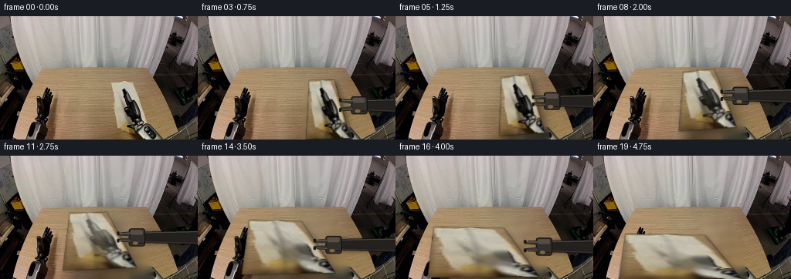
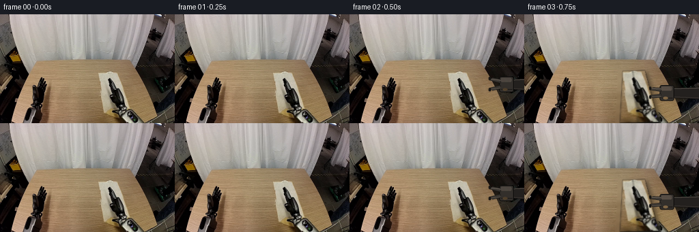
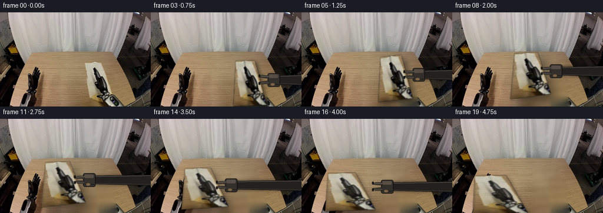
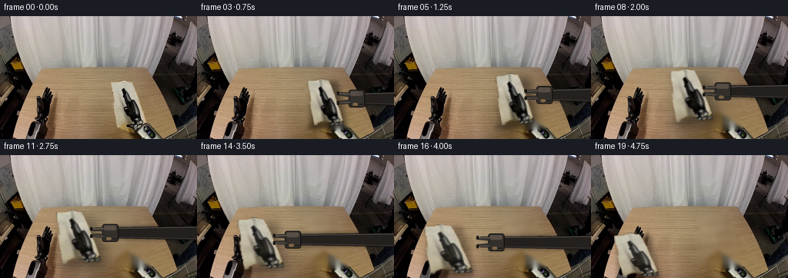
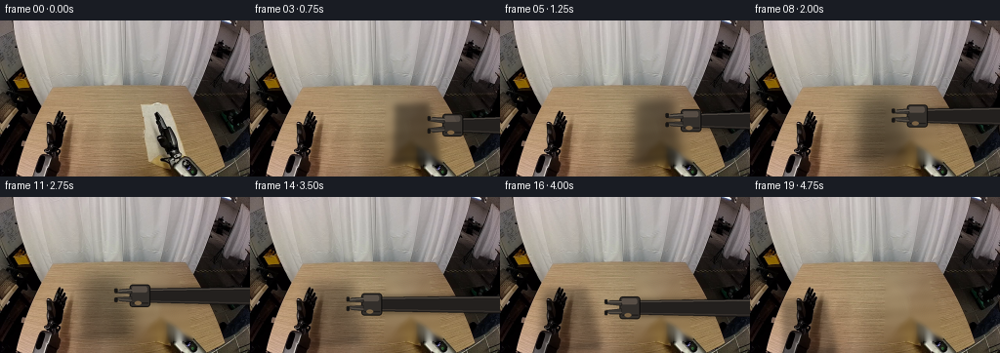
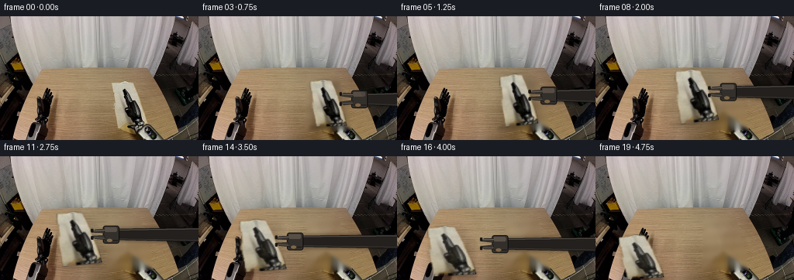
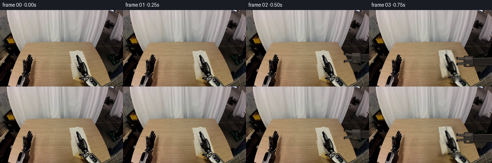

CODING AGENTS AS PIXEL WORLD MODELS
traex/DeepSeek-V4.1-Flash · common50_0030
点击播放 · 原生 RGB 像素
逐轮保存的候选
回放视频、检查图与代码变化。
每份候选均可单独播放。实际图片检查记录在下方工具轨迹中。
候选 01播放与检查图
点击播放 · 原生 RGB 像素


展开代码变化
--- 上一保存版本
+++ 本次保存版本
@@ -0,0 +1,387 @@
+from pathlib import Path
+
+import cv2
+import numpy as np
+from PIL import Image, ImageDraw, ImageFilter
+
+import artifact_io
+
+
+ROOT = Path(__file__).resolve().parent
+W, H, N = 256, 160, 20
+
+
+def smoothstep(x):
+ x = np.clip(x, 0.0, 1.0)
+ return x * x * (3.0 - 2.0 * x)
+
+
+def ease(x):
+ x = np.clip(x, 0.0, 1.0)
+ return 0.5 - 0.5 * np.cos(np.pi * x)
+
+
+def poly_mask(points, shape=(H, W), blur=0.0):
+ mask = np.zeros(shape, np.uint8)
+ cv2.fillPoly(mask, [np.round(points).astype(np.int32)], 255)
+ if blur > 0:
+ mask = cv2.GaussianBlur(mask, (0, 0), blur)
+ return mask.astype(np.float32) / 255.0
+
+
+def make_background(image):
+ """Remove the cloth while preserving the table and the two static arms."""
+ mask = np.zeros((H, W), np.uint8)
+ cv2.fillPoly(
+ mask,
+ [np.array([[138, 81], [179, 81], [199, 160], [134, 160]], np.int32)],
+ 255,
+ )
+ # Include the dark underside/crease and its immediate contact shadow.
+ cv2.ellipse(mask, (168, 119), (20, 31), -8, 0, 360, 255, -1)
+ mask = cv2.GaussianBlur(mask, (5, 5), 0)
+ background = cv2.inpaint(image, (mask > 30).astype(np.uint8) * 255, 7, cv2.INPAINT_TELEA)
+
+ # A little horizontal grain keeps the repaired tabletop from looking smeared.
+ yy, xx = np.mgrid[:H, :W]
+ grain = (
+ 2.2 * np.sin(yy * 0.42 + xx * 0.035)
+ + 1.4 * np.sin(yy * 0.11 - xx * 0.018)
+ + 0.8 * np.sin(xx * 0.31)
+ )
+ region = cv2.GaussianBlur((mask > 24).astype(np.float32), (0, 0), 3)[..., None]
+ background = np.clip(background.astype(np.float32) + grain[..., None] * region, 0, 255)
+ return background.astype(np.uint8)
+
+
+def make_cloth_texture(image):
+ """Rectify the folded cloth and make a second, flattened texture."""
+ src_quad = np.float32([[145, 84], [176, 84], [196, 159], [140, 159]])
+ tw, th = 64, 80
+ rect = np.float32([[0, 0], [tw - 1, 0], [tw - 1, th - 1], [0, th - 1]])
+ src_to_rect = cv2.getPerspectiveTransform(src_quad, rect)
+ texture = cv2.warpPerspective(
+ image, src_to_rect, (tw, th), flags=cv2.INTER_LINEAR, borderMode=cv2.BORDER_REFLECT_101
+ )
+
+ gray = cv2.cvtColor(texture, cv2.COLOR_RGB2GRAY)
+ yy, xx = np.mgrid[:th, :tw]
+ u = xx / (tw - 1.0)
+ v = yy / (th - 1.0)
+ central = (u > 0.19) & (u < 0.84) & (v > 0.02) & (v < 0.98)
+ dark_fold = ((gray < 102) & central).astype(np.uint8) * 255
+ dark_fold = cv2.dilate(dark_fold, np.ones((3, 3), np.uint8), iterations=1)
+ clean = cv2.inpaint(texture, dark_fold, 5, cv2.INPAINT_TELEA)
+
+ # Feather only the repaired fold region so the woven texture remains intact.
+ feather = cv2.GaussianBlur((dark_fold > 0).astype(np.float32), (0, 0), 2.2)
+ clean = np.clip(clean.astype(np.float32) * (1 - feather[..., None])
+ + cv2.GaussianBlur(clean, (0, 0), 0.65).astype(np.float32) * feather[..., None],
+ 0, 255).astype(np.uint8)
+ return texture, clean, rect
+
+
+def shade_texture(texture, flatten, phase):
+ th, tw = texture.shape[:2]
+ yy, xx = np.mgrid[:th, :tw]
+ u = xx / (tw - 1.0)
+ v = yy / (th - 1.0)
+
+ # The original central fold becomes a shallower crease as the cloth opens.
+ fold_u = 0.455 + 0.026 * np.sin((v - 0.08) * 2.7) + 0.032 * flatten * np.sin(v * 4.2)
+ distance = np.abs(u - fold_u)
+ crease = np.exp(-(distance / 0.050) ** 2) * (0.48 - 0.31 * flatten)
+ shoulder = np.exp(-((distance - 0.075) / 0.040) ** 2) * (0.12 - 0.04 * flatten)
+
+ wrinkle = (
+ 0.030 * np.sin(v * 13.0 + u * 5.0 + phase)
+ + 0.018 * np.sin(v * 27.0 - u * 9.0 + phase * 1.7)
+ ) * (0.42 + 0.58 * (1.0 - flatten))
+
+ edge = np.minimum.reduce([u, 1.0 - u, v, 1.0 - v])
+ edge_falloff = np.clip(edge / 0.055, 0.0, 1.0)
+ edge_shade = 0.84 + 0.16 * edge_falloff
+ top_light = 0.07 * np.exp(-(v / 0.045) ** 2)
+ left_light = 0.035 * np.exp(-((u - 0.035) / 0.045) ** 2) * (1.0 - 0.5 * v)
+ bottom_shadow = 0.045 * np.exp(-((1.0 - v) / 0.055) ** 2)
+
+ shade = edge_shade - crease * 0.42 + shoulder * 0.18 + wrinkle + top_light + left_light - bottom_shadow
+ shade = np.clip(shade, 0.58, 1.16)
+ return np.clip(texture.astype(np.float32) * shade[..., None], 0, 255)
+
+
+def keyframe_quad(frame):
+ """Cloth corners TL, TR, BR, BL across the grasp/lift/carry/flatten action."""
+ keys = np.array(
+ [
+ [0.0, 145, 84, 176, 84, 196, 159, 140, 159],
+ [2.0, 145, 84, 176, 84, 196, 159, 140, 159],
+ [3.2, 144, 83, 176, 82, 196, 157, 140, 158],
+ [5.0, 137, 79, 172, 75, 192, 150, 134, 154],
+ [7.2, 121, 72, 160, 68, 186, 143, 116, 148],
+ [10.0, 96, 72, 140, 70, 176, 142, 88, 146],
+ [13.0, 72, 80, 132, 82, 174, 149, 62, 152],
+ [16.0, 50, 92, 140, 94, 184, 156, 42, 157],
+ [19.0, 42, 101, 144, 103, 190, 159, 34, 159],
+ ],
+ np.float32,
+ )
+ f = np.clip(frame, 0, N - 1)
+ out = np.zeros(8, np.float32)
+ for i in range(8):
+ out[i] = np.interp(f, keys[:, 0], keys[:, i + 1])
+ # Ease the corner motion between keyframes by blending toward a cosine ease.
+ if f > 2.0:
+ k = np.searchsorted(keys[:, 0], f, side="right") - 1
+ k = min(k, len(keys) - 2)
+ t = (f - keys[k, 0]) / max(keys[k + 1, 0] - keys[k, 0], 1e-6)
+ te = ease(t)
+ a = keys[k, 1:]
+ b = keys[k + 1, 1:]
+ out = a * (1 - te) + b * te
+ return out.reshape(4, 2).astype(np.float32)
+
+
+def lift_amount(frame):
+ keys = np.array(
+ [
+ [0, 0.0],
+ [2, 0.0],
+ [4, 0.18],
+ [7, 1.0],
+ [12, 1.0],
+ [15, 0.42],
+ [17, 0.0],
+ [19, 0.0],
+ ],
+ np.float32,
+ )
+ return float(np.interp(frame, keys[:, 0], keys[:, 1]))
+
+
+def flatten_amount(frame):
+ keys = np.array(
+ [
+ [0, 0.0],
+ [4, 0.0],
+ [8, 0.12],
+ [12, 0.38],
+ [15, 0.72],
+ [18, 1.0],
+ [19, 1.0],
+ ],
+ np.float32,
+ )
+ return float(np.interp(frame, keys[:, 0], keys[:, 1]))
+
+
+def warp_cloth(texture, rect, quad, frame):
+ matrix = cv2.getPerspectiveTransform(rect, quad.astype(np.float32))
+ warped = cv2.warpPerspective(
+ texture,
+ matrix,
+ (W, H),
+ flags=cv2.INTER_LINEAR,
+ borderMode=cv2.BORDER_CONSTANT,
+ borderValue=(0, 0, 0),
+ )
+ ones = np.ones(texture.shape[:2], np.float32)
+ alpha = cv2.warpPerspective(
+ ones,
+ matrix,
+ (W, H),
+ flags=cv2.INTER_LINEAR,
+ borderMode=cv2.BORDER_CONSTANT,
+ borderValue=0,
+ )
+ alpha = np.clip(alpha, 0, 1)
+ alpha = cv2.GaussianBlur(alpha, (3, 3), 0.55)
+ return warped.astype(np.float32), alpha
+
+
+def cloth_shadow(background, quad, lift, flatten):
+ points = quad.copy()
+ points[:, 0] += 3.0 + 6.0 * lift
+ points[:, 1] += 3.0 + 7.0 * lift
+ shadow = poly_mask(points, blur=3.0 + 5.5 * lift)
+ shadow *= 0.42 - 0.12 * flatten
+ return np.clip(background.astype(np.float32) * (1.0 - shadow[..., None]), 0, 255)
+
+
+def draw_gripper(frame, image, quad, grip_x):
+ """Draw a rigid two-finger right gripper with a telescoping wrist."""
+ if frame < 1 or frame > 19:
+ return image
+
+ right_top, right_bottom = quad[1], quad[2]
+ mid = (right_top + right_bottom) * 0.5
+
+ approach = ease((frame - 1.0) / 2.4)
+ retreat = ease((frame - 15.0) / 4.0)
+ target = np.array([mid[0] + 13.0, mid[1] - 3.0], np.float32)
+ start = np.array([236.0, 93.0], np.float32)
+ wrist = start * (1.0 - approach) + target * approach
+ wrist = wrist * (1.0 - retreat) + np.array([241.0, 89.0], np.float32) * retreat
+
+ grip = smoothstep((frame - 2.2) / 1.6) * (1.0 - smoothstep((frame - 15.0) / 3.0))
+ fade = smoothstep((frame - 0.8) / 1.2) * (1.0 - smoothstep((frame - 17.4) / 1.8))
+ if fade <= 0.01:
+ return image
+
+ scale = 3
+ layer = Image.new("RGBA", (W * scale, H * scale), (0, 0, 0, 0))
+ d = ImageDraw.Draw(layer)
+
+ def p(x, y):
+ return (int(round(x * scale)), int(round(y * scale)))
+
+ # Soft cast shadow under the arm.
+ shadow = Image.new("RGBA", layer.size, (0, 0, 0, 0))
+ sd = ImageDraw.Draw(shadow)
+ sx, sy = wrist
+ sd.polygon(
+ [p(wrist[0] + 7, wrist[1] - 8), p(W + 8, wrist[1] - 9),
+ p(W + 8, wrist[1] + 10), p(wrist[0] + 7, wrist[1] + 9)],
+ fill=(8, 6, 5, 105),
+ )
+ shadow = shadow.filter(ImageFilter.GaussianBlur(2.2 * scale))
+ layer.alpha_composite(shadow)
+
+ # Telescoping forearm. The static arm remains visible at the right edge.
+ arm = [
+ p(wrist[0] + 4, wrist[1] - 6.5),
+ p(W + 10, wrist[1] - 8.5),
+ p(W + 10, wrist[1] + 10.0),
+ p(wrist[0] + 4, wrist[1] + 7.0),
+ ]
+ d.polygon(arm, fill=(35, 32, 30, 255), outline=(10, 9, 8, 255))
+ d.line([p(wrist[0] + 7, wrist[1] - 5.4), p(W + 7, wrist[1] - 7.0)],
+ fill=(108, 100, 91, 230), width=max(1, scale))
+ d.line([p(wrist[0] + 9, wrist[1] + 6.0), p(W + 7, wrist[1] + 8.0)],
+ fill=(67, 61, 55, 235), width=max(1, scale))
+
+ # Wrist block.
+ wx0, wy0 = wrist[0] - 3, wrist[1] - 11
+ wx1, wy1 = wrist[0] + 18, wrist[1] + 12
+ d.rounded_rectangle(
+ [p(wx0, wy0), p(wx1, wy1)],
+ radius=3 * scale,
+ fill=(51, 47, 43, 255),
+ outline=(13, 12, 11, 255),
+ width=max(1, scale),
+ )
+ d.rounded_rectangle(
+ [p(wx0 + 2, wy0 + 2), p(wx1 - 3, wy0 + 8)],
+ radius=2 * scale,
+ fill=(82, 75, 68, 235),
+ )
+ d.line([p(wx0 + 3, wy1 - 4), p(wx1 - 2, wy1 - 4)],
+ fill=(26, 23, 21, 255), width=max(1, scale))
+
+ # Two opposing fingers. They close toward the grabbed edge.
+ tip_x = wrist[0] - 18.0
+ spread = 8.0 - 3.4 * grip
+ upper = [
+ p(wrist[0] - 1, wrist[1] - 7),
+ p(tip_x + 5, wrist[1] - spread - 1.5),
+ p(tip_x, wrist[1] - spread + 2.2),
+ p(wrist[0] - 1, wrist[1] - 1.5),
+ ]
+ lower = [
+ p(wrist[0] - 1, wrist[1] + 7),
+ p(tip_x + 5, wrist[1] + spread + 1.5),
+ p(tip_x, wrist[1] + spread - 2.2),
+ p(wrist[0] - 1, wrist[1] + 1.5),
+ ]
+ for finger in (upper, lower):
+ d.polygon(finger, fill=(55, 51, 47, 255), outline=(11, 10, 9, 255))
+ d.line([p(wrist[0] - 1, wrist[1] - 5.4), p(tip_x + 2, wrist[1] - spread + 0.4)],
+ fill=(128, 119, 106, 225), width=max(1, scale))
+ d.line([p(wrist[0] - 1, wrist[1] + 5.4), p(tip_x + 2, wrist[1] + spread - 0.4)],
+ fill=(98, 90, 81, 220), width=max(1, scale))
+
+ # Rubber contact pads at the jaw tips.
+ pad_w, pad_h = 2.6, 2.0
+ d.rounded_rectangle(
+ [p(tip_x - 0.5, wrist[1] - spread - 2.5), p(tip_x + pad_w, wrist[1] - spread + 2.0)],
+ radius=scale,
+ fill=(23, 21, 19, 255),
+ )
+ d.rounded_rectangle(
+ [p(tip_x - 0.5, wrist[1] + spread - 2.0), p(tip_x + pad_w, wrist[1] + spread + 2.5)],
+ radius=scale,
+ fill=(23, 21, 19, 255),
+ )
+
+ # A tiny warm reflection from the tabletop.
+ d.ellipse([p(wx0 + 5, wy1 - 6), p(wx0 + 12, wy1 - 2)], fill=(111, 86, 58, 150))
+
+ layer = layer.resize((W, H), Image.Resampling.LANCZOS)
+ rgba = np.asarray(layer, np.float32) / 255.0
+ alpha = rgba[..., 3:4] * fade
+ return np.clip(
+ image.astype(np.float32) * (1.0 - alpha) + rgba[..., :3] * 255.0 * alpha,
+ 0,
+ 255,
+ )
+
+
+def render_frame(background, texture, clean, rect, frame):
+ quad = keyframe_quad(frame)
+ lift = lift_amount(frame)
+ flatten = flatten_amount(frame)
+
+ shadowed = cloth_shadow(background, quad, lift, flatten)
+
+ blend = smoothstep((frame - 5.0) / 11.0)
+ texture_frame = texture.astype(np.float32) * (1.0 - blend) + clean.astype(np.float32) * blend
+ phase = 0.55 * frame
+ texture_frame = shade_texture(texture_frame, flatten, phase)
+ cloth, alpha = warp_cloth(texture_frame, rect, quad, frame)
+
+ # A grounded contact darkening along the lower edge.
+ contact = poly_mask(
+ np.array(
+ [
+ quad[3] + [1.0, -1.0],
+ quad[2] + [-1.0, -1.0],
+ quad[2] + [0.0, 4.0],
+ quad[3] + [0.0, 4.0],
+ ],
+ np.float32,
+ ),
+ blur=2.0,
+ )
+ contact *= 0.20 * (1.0 - 0.55 * lift)
+ shadowed = np.clip(shadowed.astype(np.float32) * (1.0 - contact[..., None]), 0, 255)
+
+ out = shadowed.astype(np.float32) * (1.0 - alpha[..., None]) + cloth * alpha[..., None]
+
+ # Keep the gripper's point of contact aligned with the cloth's right edge.
+ grip_x = float(quad[1, 0])
+ out = draw_gripper(frame, out, quad, grip_x)
+ return np.clip(out, 0, 255).astype(np.uint8)
+
+
+def main():
+ image = np.asarray(Image.open(ROOT / "first_frame.png").convert("RGB"))
+ background = make_background(image)
+ texture, clean, rect = make_cloth_texture(image)
+
+ frames = np.empty((N, H, W, 3), np.uint8)
+ frames[0] = image
+
+ # Approach frames retain the photographed cloth while the gripper enters.
+ for f in (1, 2):
+ frames[f] = draw_gripper(f, image.astype(np.float32), keyframe_quad(f), 0.0).astype(np.uint8)
+
+ for f in range(3, N):
+ frames[f] = render_frame(background, texture, clean, rect, f)
+
+ # Guarantee the contract's exact first frame.
+ frames[0] = image
+ artifact_io.save(frames, ROOT)
+
+
+if __name__ == "__main__":
+ main()
候选 02播放与检查图
点击播放 · 原生 RGB 像素

展开代码变化
--- 上一保存版本
+++ 本次保存版本
@@ -116,13 +116,13 @@
[
[0.0, 145, 84, 176, 84, 196, 159, 140, 159],
[2.0, 145, 84, 176, 84, 196, 159, 140, 159],
- [3.2, 144, 83, 176, 82, 196, 157, 140, 158],
- [5.0, 137, 79, 172, 75, 192, 150, 134, 154],
- [7.2, 121, 72, 160, 68, 186, 143, 116, 148],
- [10.0, 96, 72, 140, 70, 176, 142, 88, 146],
- [13.0, 72, 80, 132, 82, 174, 149, 62, 152],
- [16.0, 50, 92, 140, 94, 184, 156, 42, 157],
- [19.0, 42, 101, 144, 103, 190, 159, 34, 159],
+ [3.2, 144, 82, 176, 81, 196, 156, 140, 158],
+ [5.0, 134, 76, 169, 72, 188, 145, 130, 151],
+ [7.2, 111, 69, 150, 67, 171, 137, 104, 146],
+ [10.0, 82, 71, 122, 69, 148, 139, 75, 148],
+ [13.0, 62, 81, 105, 80, 133, 146, 56, 152],
+ [16.0, 45, 92, 91, 91, 124, 153, 40, 156],
+ [19.0, 38, 96, 91, 96, 127, 159, 35, 159],
],
np.float32,
)
@@ -333,7 +333,8 @@
shadowed = cloth_shadow(background, quad, lift, flatten)
- blend = smoothstep((frame - 5.0) / 11.0)
+ # Keep the physical half-fold visible; flattening only relaxes its crease.
+ blend = 0.18 * smoothstep((frame - 6.0) / 12.0)
texture_frame = texture.astype(np.float32) * (1.0 - blend) + clean.astype(np.float32) * blend
phase = 0.55 * frame
texture_frame = shade_texture(texture_frame, flatten, phase)
候选 03播放与检查图
点击播放 · 原生 RGB 像素

展开代码变化
--- 上一保存版本
+++ 本次保存版本
@@ -34,11 +34,11 @@
mask = np.zeros((H, W), np.uint8)
cv2.fillPoly(
mask,
- [np.array([[138, 81], [179, 81], [199, 160], [134, 160]], np.int32)],
+ [np.array([[140, 80], [180, 80], [196, 146], [138, 146]], np.int32)],
255,
)
# Include the dark underside/crease and its immediate contact shadow.
- cv2.ellipse(mask, (168, 119), (20, 31), -8, 0, 360, 255, -1)
+ cv2.ellipse(mask, (168, 119), (18, 29), -8, 0, 360, 255, -1)
mask = cv2.GaussianBlur(mask, (5, 5), 0)
background = cv2.inpaint(image, (mask > 30).astype(np.uint8) * 255, 7, cv2.INPAINT_TELEA)
@@ -56,8 +56,8 @@
def make_cloth_texture(image):
"""Rectify the folded cloth and make a second, flattened texture."""
- src_quad = np.float32([[145, 84], [176, 84], [196, 159], [140, 159]])
- tw, th = 64, 80
+ src_quad = np.float32([[145, 84], [179, 84], [190, 143], [143, 143]])
+ tw, th = 48, 60
rect = np.float32([[0, 0], [tw - 1, 0], [tw - 1, th - 1], [0, th - 1]])
src_to_rect = cv2.getPerspectiveTransform(src_quad, rect)
texture = cv2.warpPerspective(
@@ -78,7 +78,29 @@
clean = np.clip(clean.astype(np.float32) * (1 - feather[..., None])
+ cv2.GaussianBlur(clean, (0, 0), 0.65).astype(np.float32) * feather[..., None],
0, 255).astype(np.uint8)
- return texture, clean, rect
+
+ hsv = cv2.cvtColor(image, cv2.COLOR_RGB2HSV)
+ cloth = ((hsv[:, :, 1] < 72) & (hsv[:, :, 2] > 105)).astype(np.uint8) * 255
+ roi = poly_mask(src_quad, blur=0.0) > 0
+ cloth[~roi] = 0
+ cloth = cv2.morphologyEx(cloth, cv2.MORPH_CLOSE, np.ones((7, 7), np.uint8))
+ cloth = cv2.morphologyEx(cloth, cv2.MORPH_OPEN, np.ones((3, 3), np.uint8))
+ contours, _ = cv2.findContours(cloth, cv2.RETR_EXTERNAL, cv2.CHAIN_APPROX_SIMPLE)
+ if contours:
+ largest = max(contours, key=cv2.contourArea)
+ cloth[:] = 0
+ cv2.drawContours(cloth, [largest], -1, 255, -1)
+ alpha = cv2.warpPerspective(
+ cloth,
+ src_to_rect,
+ (tw, th),
+ flags=cv2.INTER_LINEAR,
+ borderMode=cv2.BORDER_CONSTANT,
+ borderValue=0,
+ ).astype(np.float32) / 255.0
+ alpha = cv2.GaussianBlur(alpha, (3, 3), 0.65)
+ alpha = np.clip((alpha - 0.12) / 0.76, 0.0, 1.0)
+ return texture, clean, alpha, rect
def shade_texture(texture, flatten, phase):
@@ -114,15 +136,15 @@
"""Cloth corners TL, TR, BR, BL across the grasp/lift/carry/flatten action."""
keys = np.array(
[
- [0.0, 145, 84, 176, 84, 196, 159, 140, 159],
- [2.0, 145, 84, 176, 84, 196, 159, 140, 159],
- [3.2, 144, 82, 176, 81, 196, 156, 140, 158],
- [5.0, 134, 76, 169, 72, 188, 145, 130, 151],
- [7.2, 111, 69, 150, 67, 171, 137, 104, 146],
- [10.0, 82, 71, 122, 69, 148, 139, 75, 148],
- [13.0, 62, 81, 105, 80, 133, 146, 56, 152],
- [16.0, 45, 92, 91, 91, 124, 153, 40, 156],
- [19.0, 38, 96, 91, 96, 127, 159, 35, 159],
+ [0.0, 145, 84, 179, 84, 190, 143, 143, 143],
+ [2.0, 145, 84, 179, 84, 190, 143, 143, 143],
+ [3.2, 144, 82, 179, 81, 190, 140, 143, 142],
+ [5.0, 133, 76, 169, 73, 181, 137, 130, 143],
+ [7.2, 109, 69, 149, 68, 163, 132, 104, 139],
+ [10.0, 79, 70, 120, 69, 135, 134, 74, 141],
+ [13.0, 58, 79, 100, 78, 116, 142, 53, 148],
+ [16.0, 40, 91, 84, 89, 101, 151, 35, 155],
+ [19.0, 30, 103, 73, 100, 87, 155, 31, 159],
],
np.float32,
)
@@ -175,7 +197,7 @@
return float(np.interp(frame, keys[:, 0], keys[:, 1]))
-def warp_cloth(texture, rect, quad, frame):
+def warp_cloth(texture, alpha_texture, rect, quad, frame):
matrix = cv2.getPerspectiveTransform(rect, quad.astype(np.float32))
warped = cv2.warpPerspective(
texture,
@@ -185,9 +207,8 @@
borderMode=cv2.BORDER_CONSTANT,
borderValue=(0, 0, 0),
)
- ones = np.ones(texture.shape[:2], np.float32)
alpha = cv2.warpPerspective(
- ones,
+ alpha_texture,
matrix,
(W, H),
flags=cv2.INTER_LINEAR,
@@ -195,7 +216,7 @@
borderValue=0,
)
alpha = np.clip(alpha, 0, 1)
- alpha = cv2.GaussianBlur(alpha, (3, 3), 0.55)
+ alpha = cv2.GaussianBlur(alpha, (3, 3), 0.45)
return warped.astype(np.float32), alpha
@@ -326,7 +347,7 @@
)
-def render_frame(background, texture, clean, rect, frame):
+def render_frame(background, texture, clean, alpha_texture, rect, frame):
quad = keyframe_quad(frame)
lift = lift_amount(frame)
flatten = flatten_amount(frame)
@@ -338,7 +359,7 @@
texture_frame = texture.astype(np.float32) * (1.0 - blend) + clean.astype(np.float32) * blend
phase = 0.55 * frame
texture_frame = shade_texture(texture_frame, flatten, phase)
- cloth, alpha = warp_cloth(texture_frame, rect, quad, frame)
+ cloth, alpha = warp_cloth(texture_frame, alpha_texture, rect, quad, frame)
# A grounded contact darkening along the lower edge.
contact = poly_mask(
@@ -367,7 +388,7 @@
def main():
image = np.asarray(Image.open(ROOT / "first_frame.png").convert("RGB"))
background = make_background(image)
- texture, clean, rect = make_cloth_texture(image)
+ texture, clean, alpha_texture, rect = make_cloth_texture(image)
frames = np.empty((N, H, W, 3), np.uint8)
frames[0] = image
@@ -377,7 +398,7 @@
frames[f] = draw_gripper(f, image.astype(np.float32), keyframe_quad(f), 0.0).astype(np.uint8)
for f in range(3, N):
- frames[f] = render_frame(background, texture, clean, rect, f)
+ frames[f] = render_frame(background, texture, clean, alpha_texture, rect, f)
# Guarantee the contract's exact first frame.
frames[0] = image
候选 04播放与检查图
点击播放 · 原生 RGB 像素

展开代码变化
--- 上一保存版本
+++ 本次保存版本
@@ -80,7 +80,10 @@
0, 255).astype(np.uint8)
hsv = cv2.cvtColor(image, cv2.COLOR_RGB2HSV)
- cloth = ((hsv[:, :, 1] < 72) & (hsv[:, :, 2] > 105)).astype(np.uint8) * 255
+ cloth = (
+ ((hsv[:, :, 1] < 85) & (hsv[:, :, 2] > 95))
+ | (hsv[:, :, 2] < 80)
+ ).astype(np.uint8) * 255
roi = poly_mask(src_quad, blur=0.0) > 0
cloth[~roi] = 0
cloth = cv2.morphologyEx(cloth, cv2.MORPH_CLOSE, np.ones((7, 7), np.uint8))
@@ -100,7 +103,12 @@
).astype(np.float32) / 255.0
alpha = cv2.GaussianBlur(alpha, (3, 3), 0.65)
alpha = np.clip((alpha - 0.12) / 0.76, 0.0, 1.0)
- return texture, clean, alpha, rect
+
+ # Carry a clean silhouette along with the pixel texture. This keeps the
+ # folded cloth from becoming a rectangular billboard while airborne.
+ silhouette = cloth.astype(np.float32) / 255.0
+ silhouette = cv2.GaussianBlur(silhouette, (3, 3), 0.75)
+ return texture, clean, alpha, silhouette, rect
def shade_texture(texture, flatten, phase):
@@ -197,7 +205,7 @@
return float(np.interp(frame, keys[:, 0], keys[:, 1]))
-def warp_cloth(texture, alpha_texture, rect, quad, frame):
+def warp_cloth(texture, alpha_texture, silhouette, rect, quad, frame):
matrix = cv2.getPerspectiveTransform(rect, quad.astype(np.float32))
warped = cv2.warpPerspective(
texture,
@@ -217,6 +225,15 @@
)
alpha = np.clip(alpha, 0, 1)
alpha = cv2.GaussianBlur(alpha, (3, 3), 0.45)
+ warped_silhouette = cv2.warpPerspective(
+ silhouette,
+ matrix,
+ (W, H),
+ flags=cv2.INTER_LINEAR,
+ borderMode=cv2.BORDER_CONSTANT,
+ borderValue=0,
+ )
+ alpha *= np.clip(warped_silhouette, 0, 1)
return warped.astype(np.float32), alpha
@@ -347,7 +364,7 @@
)
-def render_frame(background, texture, clean, alpha_texture, rect, frame):
+def render_frame(background, texture, clean, alpha_texture, silhouette, rect, frame):
quad = keyframe_quad(frame)
lift = lift_amount(frame)
flatten = flatten_amount(frame)
@@ -359,7 +376,7 @@
texture_frame = texture.astype(np.float32) * (1.0 - blend) + clean.astype(np.float32) * blend
phase = 0.55 * frame
texture_frame = shade_texture(texture_frame, flatten, phase)
- cloth, alpha = warp_cloth(texture_frame, alpha_texture, rect, quad, frame)
+ cloth, alpha = warp_cloth(texture_frame, alpha_texture, silhouette, rect, quad, frame)
# A grounded contact darkening along the lower edge.
contact = poly_mask(
@@ -388,7 +405,7 @@
def main():
image = np.asarray(Image.open(ROOT / "first_frame.png").convert("RGB"))
background = make_background(image)
- texture, clean, alpha_texture, rect = make_cloth_texture(image)
+ texture, clean, alpha_texture, silhouette, rect = make_cloth_texture(image)
frames = np.empty((N, H, W, 3), np.uint8)
frames[0] = image
@@ -398,7 +415,7 @@
frames[f] = draw_gripper(f, image.astype(np.float32), keyframe_quad(f), 0.0).astype(np.uint8)
for f in range(3, N):
- frames[f] = render_frame(background, texture, clean, alpha_texture, rect, f)
+ frames[f] = render_frame(background, texture, clean, alpha_texture, silhouette, rect, f)
# Guarantee the contract's exact first frame.
frames[0] = image
候选 05播放与检查图

候选 06播放与检查图
点击播放 · 原生 RGB 像素

展开代码变化
--- 上一保存版本
+++ 本次保存版本
@@ -93,22 +93,11 @@
largest = max(contours, key=cv2.contourArea)
cloth[:] = 0
cv2.drawContours(cloth, [largest], -1, 255, -1)
- alpha = cv2.warpPerspective(
- cloth,
- src_to_rect,
- (tw, th),
- flags=cv2.INTER_LINEAR,
- borderMode=cv2.BORDER_CONSTANT,
- borderValue=0,
- ).astype(np.float32) / 255.0
- alpha = cv2.GaussianBlur(alpha, (3, 3), 0.65)
- alpha = np.clip((alpha - 0.12) / 0.76, 0.0, 1.0)
-
# Carry a clean silhouette along with the pixel texture. This keeps the
# folded cloth from becoming a rectangular billboard while airborne.
silhouette = cloth.astype(np.float32) / 255.0
silhouette = cv2.GaussianBlur(silhouette, (3, 3), 0.75)
- return texture, clean, alpha, silhouette, rect
+ return texture, clean, silhouette, rect
def shade_texture(texture, flatten, phase):
@@ -205,7 +194,7 @@
return float(np.interp(frame, keys[:, 0], keys[:, 1]))
-def warp_cloth(texture, alpha_texture, silhouette, rect, quad, frame):
+def warp_cloth(texture, silhouette, rect, quad, frame):
matrix = cv2.getPerspectiveTransform(rect, quad.astype(np.float32))
warped = cv2.warpPerspective(
texture,
@@ -215,16 +204,6 @@
borderMode=cv2.BORDER_CONSTANT,
borderValue=(0, 0, 0),
)
- alpha = cv2.warpPerspective(
- alpha_texture,
- matrix,
- (W, H),
- flags=cv2.INTER_LINEAR,
- borderMode=cv2.BORDER_CONSTANT,
- borderValue=0,
- )
- alpha = np.clip(alpha, 0, 1)
- alpha = cv2.GaussianBlur(alpha, (3, 3), 0.45)
warped_silhouette = cv2.warpPerspective(
silhouette,
matrix,
@@ -233,7 +212,7 @@
borderMode=cv2.BORDER_CONSTANT,
borderValue=0,
)
- alpha *= np.clip(warped_silhouette, 0, 1)
+ alpha = cv2.GaussianBlur(np.clip(warped_silhouette, 0, 1), (3, 3), 0.45)
return warped.astype(np.float32), alpha
@@ -364,7 +343,7 @@
)
-def render_frame(background, texture, clean, alpha_texture, silhouette, rect, frame):
+def render_frame(background, texture, clean, silhouette, rect, frame):
quad = keyframe_quad(frame)
lift = lift_amount(frame)
flatten = flatten_amount(frame)
@@ -376,7 +355,7 @@
texture_frame = texture.astype(np.float32) * (1.0 - blend) + clean.astype(np.float32) * blend
phase = 0.55 * frame
texture_frame = shade_texture(texture_frame, flatten, phase)
- cloth, alpha = warp_cloth(texture_frame, alpha_texture, silhouette, rect, quad, frame)
+ cloth, alpha = warp_cloth(texture_frame, silhouette, rect, quad, frame)
# A grounded contact darkening along the lower edge.
contact = poly_mask(
@@ -405,7 +384,7 @@
def main():
image = np.asarray(Image.open(ROOT / "first_frame.png").convert("RGB"))
background = make_background(image)
- texture, clean, alpha_texture, silhouette, rect = make_cloth_texture(image)
+ texture, clean, silhouette, rect = make_cloth_texture(image)
frames = np.empty((N, H, W, 3), np.uint8)
frames[0] = image
@@ -415,7 +394,7 @@
frames[f] = draw_gripper(f, image.astype(np.float32), keyframe_quad(f), 0.0).astype(np.uint8)
for f in range(3, N):
- frames[f] = render_frame(background, texture, clean, alpha_texture, silhouette, rect, f)
+ frames[f] = render_frame(background, texture, clean, silhouette, rect, f)
# Guarantee the contract's exact first frame.
frames[0] = image
候选 07播放与检查图
点击播放 · 原生 RGB 像素

展开代码变化
--- 上一保存版本
+++ 本次保存版本
@@ -95,7 +95,14 @@
cv2.drawContours(cloth, [largest], -1, 255, -1)
# Carry a clean silhouette along with the pixel texture. This keeps the
# folded cloth from becoming a rectangular billboard while airborne.
- silhouette = cloth.astype(np.float32) / 255.0
+ silhouette = cv2.warpPerspective(
+ cloth,
+ src_to_rect,
+ (tw, th),
+ flags=cv2.INTER_LINEAR,
+ borderMode=cv2.BORDER_CONSTANT,
+ borderValue=0,
+ ).astype(np.float32) / 255.0
silhouette = cv2.GaussianBlur(silhouette, (3, 3), 0.75)
return texture, clean, silhouette, rect
候选 08播放与检查图
候选 09播放与检查图
点击播放 · 原生 RGB 像素


展开代码变化
--- 上一保存版本
+++ 本次保存版本
@@ -225,10 +225,13 @@
def cloth_shadow(background, quad, lift, flatten):
points = quad.copy()
- points[:, 0] += 3.0 + 6.0 * lift
- points[:, 1] += 3.0 + 7.0 * lift
- shadow = poly_mask(points, blur=3.0 + 5.5 * lift)
- shadow *= 0.42 - 0.12 * flatten
+ points[:, 0] += 2.0 + 4.0 * lift
+ points[:, 1] += 2.0 + 5.0 * lift
+ shadow = poly_mask(points, blur=2.5 + 4.0 * lift)
+ shadow *= 0.20 - 0.06 * flatten
+ # The airborne shadow is a soft, offset footprint rather than a second
+ # hard silhouette; this avoids a dark rectangular patch on the table.
+ shadow = cv2.GaussianBlur(shadow, (0, 0), 3.5 + 3.5 * lift)
return np.clip(background.astype(np.float32) * (1.0 - shadow[..., None]), 0, 255)
可观测工具轨迹
实际执行的命令与返回图片。
命令 1exit 0
/bin/bash -c "pwd && rg --files -g 'prompt.txt' -g 'GENERATION_RULES.md' -g 'first_frame.png' -g '"'!node_modules'"' -g '"'!venv'"'"
命令 2exit 0
/bin/bash -c "find . -maxdepth 2 -type f -printf '%p %s bytes\\n' | sort"
命令 3exit 0
/bin/bash -c 'git status --short --branch'
命令 4exit 0
/bin/bash -c 'cat prompt.txt'
命令 5exit 0
/bin/bash -c 'cat GENERATION_RULES.md'
命令 6exit 0
/bin/bash -c 'cat task_spec.json'
命令 7exit 0
/bin/bash -c "sed -n '1,260p' artifact_io.py"
命令 8exit 127
/bin/bash -c "file first_frame.png && identify -verbose first_frame.png | sed -n '1,80p'"
命令 9exit 0
/bin/bash -c "python - <<'PY'
from PIL import Image
import numpy as np
im=Image.open('first_frame.png').convert('RGB')
a=np.asarray(im)
print('size',im.size,'mode',im.mode,'dtype',a.dtype,'shape',a.shape)
for y in range(0,160,10):
print(y, [tuple(int(v) for v in a[y,x]) for x in range(0,256,32)])
print('mean',a.mean((0,1)),'std',a.std((0,1)))
print('min',a.min((0,1)),'max',a.max((0,1)))
PY"命令 10exit 0
/bin/bash -c "python - <<'PY' import importlib.util for m in ['cv2','scipy','skimage','numpy','PIL','imageio','matplotlib']: print(m, bool(importlib.util.find_spec(m))) PY"
命令 11exit 0
/bin/bash -c "python - <<'PY'
from PIL import Image
import numpy as np
a=np.array(Image.open('first_frame.png').convert('RGB'))
# downsample 4x4 average, print luminance with ASCII and color classes
small=np.array(Image.fromarray(a).resize((64,40), Image.Resampling.BOX)).astype(float)
y=0.2126*small[:,:,0]+0.7152*small[:,:,1]+0.0722*small[:,:,2]
chars=' .:-=+*#%@'
for row in y:
print(''.join(chars[min(9,int(v/256*10))] for v in row))
print('COLOR CLASSES: W=neutral bright, w=neutral, B=beige/orange, G=green?, D=dark, R=red')
PY"命令 12exit 0
/bin/bash -c "python - <<'PY'
import cv2, numpy as np
im=cv2.imread('first_frame.png'); rgb=im[:,:,::-1]; hsv=cv2.cvtColor(im,cv2.COLOR_BGR2HSV)
# kmeans color clusters
Z=rgb.reshape(-1,3).astype(np.float32)
crit=(cv2.TERM_CRITERIA_EPS+cv2.TERM_CRITERIA_MAX_ITER,50,.5)
_,lab,cent=cv2.kmeans(Z,12,None,crit,10,cv2.KMEANS_PP_CENTERS)
lab=lab.reshape(160,256)
for i,c in enumerate(cent.astype(int)):
ys,xs=np.where(lab==i); print(i,tuple(c),'n',len(xs),'bbox',xs.min(),ys.min(),xs.max(),ys.max(),'meanxy',round(xs.mean(),1),round(ys.mean(),1))
print('HSV ranges of clusters:')
for i in range(12):
ys,xs=np.where(lab==i); hh=hsv[ys,xs]; print(i,tuple(np.percentile(hh,[10,50,90],axis=0).astype(int).flatten()))
PY"命令 13exit 0
/bin/bash -c "python - <<'PY'
from PIL import Image
import numpy as np, cv2
a=np.array(Image.open('first_frame.png').convert('RGB'))
hsv=cv2.cvtColor(a,cv2.COLOR_RGB2HSV)
# print grid colors, 8x8 patches: dominant K means too hard; print median RGB and std
for y in range(0,160,20):
row=[]
for x in range(0,256,32):
p=a[y:y+20,x:x+32]; row.append('%02x%02x%02x'%tuple(np.median(p.reshape(-1,3),axis=0).astype(int)))
print(y, ' '.join(row))
PY"命令 14exit 0
/bin/bash -c "python - <<'PY'
from PIL import Image
import numpy as np, cv2
a=np.array(Image.open('first_frame.png').convert('RGB'))
g=cv2.cvtColor(a,cv2.COLOR_RGB2GRAY)
e=cv2.Canny(g,30,90)
# 8x8 char edge density
for y in range(0,160,5):
s=''
for x in range(0,256,4):
p=e[y:y+5,x:x+4]; d=p.mean()/255
s += ' ' if d<.03 else '.' if d<.1 else ':' if d<.2 else '+' if d<.35 else '#' if d<.55 else '@'
print(s)
PY"命令 15exit 0
/bin/bash -c "python - <<'PY'
import cv2, numpy as np
im=cv2.imread('first_frame.png'); rgb=im[:,:,::-1]
Z=rgb.reshape(-1,3).astype(np.float32)
crit=(cv2.TERM_CRITERIA_EPS+cv2.TERM_CRITERIA_MAX_ITER,80,.2)
_,lab,cent=cv2.kmeans(Z,16,None,crit,15,cv2.KMEANS_PP_CENTERS)
lab=lab.reshape(160,256)
# order clusters by brightness then hue
import colorsys
info=[]
for i,c in enumerate(cent.astype(int)):
h,s,v=colorsys.rgb_to_hsv(*(c/255)); n=(lab==i).sum(); info.append((i,tuple(c),h,s,v,n))
for z in info: print(z)
# dominant at 4x4 blocks, cluster symbols sorted brightness
order=sorted(range(16), key=lambda i: (cent[i].mean()))
syms='0123456789abcdef'
for y in range(0,160,4):
line=''
for x in range(0,256,4):
block=lab[y:y+4,x:x+4].ravel(); counts=np.bincount(block,minlength=16); i=counts.argmax(); line+=syms[order.index(i)]
print(line)
PY"命令 16exit 0
/bin/bash -c "python - <<'PY'
from PIL import Image
import numpy as np, cv2
a=np.array(Image.open('first_frame.png').convert('RGB'))
hsv=cv2.cvtColor(a,cv2.COLOR_RGB2HSV)
# sample pixels and colors around central cloth (x 55-180 y 65-155), print median each 10 block and saturation/value
for y in range(60,160,10):
print('y',y)
for x in range(0,256,20):
p=a[y:y+10,x:x+20]; med=np.median(p.reshape(-1,3),axis=0).astype(int); hh=hsv[y:y+10,x:x+20]; mh=np.median(hh.reshape(-1,3),axis=0).astype(int)
print('%3d:%s hsv%s'%(x,'#%02x%02x%02x'%tuple(med),tuple(mh)),end=' ')
print()
PY"命令 17exit 0
/bin/bash -c "python - <<'PY'
from PIL import Image
import numpy as np, cv2
a=np.array(Image.open('first_frame.png').convert('RGB'))
hsv=cv2.cvtColor(a,cv2.COLOR_RGB2HSV)
# row-wise contiguous runs using broad class: dark (<60), neutral bright (S<40,V>120), warm (S>40,V>70), other
for y in range(0,160,8):
line=''
for x in range(256):
r,g,b=map(int,a[y,x]); h,s,v=map(int,hsv[y,x]);
if v<45: c='#'
elif s<35 and v>120: c='N'
elif h<35 and s>45 and v>70: c='w' # warm wood/cloth
elif s<50 and v>80: c='n'
else: c='.'
line+=c
# compress runs >4
out=[]; last=line[0]; st=0
for i,c in enumerate(line[1:],1):
if c"'!=last:
if i-st>=5: out.append(f'"'{last}{st}-{i-1}')
last=c; st=i
if 256-st>=5: out.append(f'{last}{st}-255')
print(f'{y:3d}: '+' '.join(out))
PY"命令 18exit 0
/bin/bash -c "python - <<'PY'
import cv2, numpy as np
from PIL import Image
im=cv2.imread('first_frame.png')
g=cv2.cvtColor(im,cv2.COLOR_BGR2GRAY)
for p1,p2 in [(20,50),(30,80),(50,120),(80,160)]:
e=cv2.Canny(g,p1,p2)
n,lab,stats,cent=cv2.connectedComponentsWithStats(e,8)
print('canny',p1,p2)
for i in np.argsort(stats[1:,4])[::-1][:15]+1:
x,y,w,h,area=stats[i]; print(area,(x,y,w,h),tuple(np.round(cent[i],1)))
PY"命令 19exit 0
/bin/bash -c "python - <<'PY'
from PIL import Image
import numpy as np
im=Image.open('first_frame.png')
# print crops as sixel unavailable; calculate candidates of cloth segmentation by Lab nearest color clusters
import cv2
rgb=np.array(im.convert('RGB')); lab=cv2.cvtColor(rgb,cv2.COLOR_RGB2LAB)
# use grid of points known center to fit smooth warm color model; classify warm beige: hue 10-30, sat > 35, value > 60, x 30..210 y 60..160, plus exclude dark
hsv=cv2.cvtColor(rgb,cv2.COLOR_RGB2HSV)
for cond in [
(hsv[:,:,0]<30)&(hsv[:,:,0]>5)&(hsv[:,:,1]>35)&(hsv[:,:,2]>60),
(hsv[:,:,0]<25)&(hsv[:,:,0]>8)&(hsv[:,:,1]>55)&(hsv[:,:,2]>80),
(rgb[:,:,0]>rgb[:,:,1]+15)&(rgb[:,:,1]>rgb[:,:,2]+12)&(rgb[:,:,2]>40),
]:
m=cond.astype(np.uint8)
# morphology
m=cv2.morphologyEx(m,cv2.MORPH_CLOSE,np.ones((5,5),np.uint8));m=cv2.morphologyEx(m,cv2.MORPH_OPEN,np.ones((3,3),np.uint8))
n,labels,stats,cent=cv2.connectedComponentsWithStats(m,8)
print('---',m.sum())
for i in np.argsort(stats[1:,4])[::-1][:10]+1:
x,y,w,h,area=stats[i]; print(area,(x,y,w,h),tuple(np.round(cent[i],1)))
# row extents
for y in [70,80,90,100,110,120,130,140,150]:
xs=np.where(m[y]>0)[0]; print(y, (xs.min(),xs.max(),len(xs)) if len(xs) else None)
PY"命令 20exit 0
/bin/bash -c "python - <<'PY'
from PIL import Image
import numpy as np
im=Image.open('first_frame.png').convert('RGB')
# Use RGB distance to known local background/texture from top area at same x; find sudden transitions in y around cloth boundary
for x in [40,50,60,70,80,100,120,140,150,160,170,180,190,200]:
col=np.array([im.getpixel((x,y)) for y in range(160)]).astype(float)
d=np.linalg.norm(col[1:]-col[:-1],axis=1)
idx=np.argsort(d)[-8:][::-1]
print('x',x,[(int(i+1),round(float(d[i]),1),tuple(col[i+1].astype(int))) for i in idx])
PY"命令 21exit 0
/bin/bash -c "python - <<'PY'
from PIL import Image
import numpy as np
a=np.array(Image.open('first_frame.png').convert('RGB'))
# threshold beige based on center seed, sample specific xy and vertical profile at x 45/50/55/60/65
for y in range(60,160,4):
print(y, [('%d'%x,tuple(a[y,x])) for x in [40,45,50,55,60,65,70,75,80,90,100,110,120,130,140,150,160,170,180,190,200]])
PY"命令 22exit 0
/bin/bash -c "python - <<'PY'
from PIL import Image
import numpy as np
a=np.array(Image.open('first_frame.png').convert('RGB')).astype(float)
# print regional mean rgb and variance in candidate cloth region vs table wood (upper gray region, lower)
for box in [(0,0,256,60),(50,65,200,160),(10,90,45,160),(190,110,230,160),(30,0,60,90),(150,85,175,120)]:
x0,y0,x1,y1=box;p=a[y0:y1,x0:x1].reshape(-1,3); print(box,'mean',p.mean(0).round(1),'std',p.std(0).round(1),'med',np.median(p,0).round(1))
PY"命令 23exit 0
/bin/bash -c "python - <<'PY'
from PIL import Image
import numpy as np, cv2
a=np.array(Image.open('first_frame.png').convert('RGB'))
g=cv2.cvtColor(a,cv2.COLOR_RGB2GRAY)
# print ascii of central region every 2 px with edge + brightness, x 0-256 y 50-160
for y in range(50,160,2):
s=''
for x in range(0,256,2):
p=g[y:y+2,x:x+2]; v=p.mean(); e=np.abs(p[:,1:]-p[:,:-1]).mean() if p.shape[1]>1 else 0
s += ' ' if v<40 else '.' if v<90 else ':' if v<130 else '+' if v<165 else '*' if v<190 else '#' if v<215 else '@'
print(f'{y:3d} '+s)
PY"命令 24exit 0
/bin/bash -c "python - <<'PY'
from PIL import Image
import numpy as np
a=np.array(Image.open('first_frame.png').convert('RGB'))
# Save crops enlarged for ASCII inspection with threshold over x 20:230 y 55:160
# Show saturation map chars
import cv2
h=cv2.cvtColor(a,cv2.COLOR_RGB2HSV)
s=h[:,:,1];v=h[:,:,2]; hue=h[:,:,0]
for y in range(60,160,2):
out=''
for x in range(0,256,2):
hh,ss,vv=np.median(h[y:y+2,x:x+2].reshape(-1,3),axis=0).astype(int)
if vv<45: c=' '
elif ss<30: c='N'
elif ss<55: c='n'
elif ss<85: c='o'
elif ss<120: c='O'
else: c='#'
out+=c
print(f'{y:3d} '+out)
PY"命令 25exit 0
/bin/bash -c "python - <<'PY'
import cv2, numpy as np
from PIL import Image
a=np.array(Image.open('first_frame.png').convert('RGB'))
g=cv2.cvtColor(a,cv2.COLOR_RGB2GRAY); e=cv2.Canny(g,40,100)
for y0 in range(0,160,20):
d=e[y0:y0+20].mean(0)
print('y',y0,'top x',[(int(x),round(float(d[x]),1)) for x in np.argsort(d)[-20:][::-1]])
print('col edge densities')
for x0 in range(0,256,16): print(x0, round(float(e[:,x0:x0+16].mean()),1), round(float(g[:,x0:x0+16].mean()),1))
print('row edge densities')
for y0 in range(0,160,10): print(y0, round(float(e[y0:y0+10].mean()),1), round(float(g[y0:y0+10].mean()),1))
PY"命令 26exit 0
/bin/bash -c "python - <<'PY'
from PIL import Image
import numpy as np, cv2
a=np.array(Image.open('first_frame.png').convert('RGB'))
# candidate cloth mask color robust: local wood/texture vs beige. fit beige color relation r-g ~20-40, g-b ~25-40, brightness >70
r,g,b=[a[:,:,i].astype(int) for i in range(3)]
m=(r-g>15)&(g-b>15)&(r>95)&(b>35)
m=m.astype(np.uint8)
m=cv2.morphologyEx(m,cv2.MORPH_CLOSE,np.ones((3,3),np.uint8))
# Print extents per row
for y in range(60,160,4):
xs=np.where(m[y])[0]
print(y, (xs.min(),xs.max(),len(xs)) if len(xs) else None)
# fit largest contour, print approx polygon
cs,_=cv2.findContours(m,cv2.RETR_EXTERNAL,cv2.CHAIN_APPROX_SIMPLE); cs=sorted(cs,key=cv2.contourArea,reverse=True)
for c in cs[:5]:
print('area',cv2.contourArea(c),'bbox',cv2.boundingRect(c),'poly',cv2.approxPolyDP(c,5,True).reshape(-1,2).tolist())
PY"命令 27exit 0
/bin/bash -c "python - <<'PY'
from PIL import Image
import numpy as np, cv2
a=np.array(Image.open('first_frame.png').convert('RGB'))
h=cv2.cvtColor(a,cv2.COLOR_RGB2HSV)
m=(h[:,:,1]<42)&(h[:,:,2]>145)
m[:65]=False
# remove tiny / morph
m=cv2.morphologyEx(m.astype(np.uint8),cv2.MORPH_CLOSE,np.ones((3,3),np.uint8))
n,lab,stats,cent=cv2.connectedComponentsWithStats(m,8)
for i in np.argsort(stats[1:,4])[::-1][:20]+1:
x,y,w,hh,area=stats[i]; print(i,area,(x,y,w,hh),tuple(np.round(cent[i],1)))
print('rows')
for y in range(70,160,2):
xs=np.where(m[y])[0]; runs=[]
if len(xs):
st=xs[0];last=xs[0]
for x in xs[1:]:
if x>last+1:
if last-st>=2:runs.append((st,last))
st=x
last=x
if last-st>=2:runs.append((st,last))
print(y,runs)
PY"命令 28exit 0
/bin/bash -c "python - <<'PY'
from PIL import Image
import numpy as np, cv2
a=np.array(Image.open('first_frame.png').convert('RGB'))
hsv=cv2.cvtColor(a,cv2.COLOR_RGB2HSV)
# median 4x4 blocks then classify
for y in range(0,160,4):
line=''
for x in range(0,256,4):
h,s,v=np.median(hsv[y:y+4,x:x+4].reshape(-1,3),axis=0)
h=int(h);s=int(s);v=int(v)
if v<25: c='@'
elif v<50: c='#'
elif v<80: c='D'
elif s<18 and v>175: c='W'
elif s<30 and v>135: c='H'
elif s<45 and v>100: c='h'
elif s<55 and v>65: c='g'
elif h<8 or h>170: c='R'
elif 8<=h<22 and s>=80: c='b'
elif 8<=h<22 and s>=50: c='o'
elif 8<=h<22: c='w'
elif h<45: c='y'
elif 45<=h<100: c='G'
else: c='B'
line+=c
print(f'{y:3d} {line}')
PY"命令 29exit 0
/bin/bash -c "python - <<'PY'
import cv2,numpy as np
from PIL import Image
a=np.array(Image.open('first_frame.png').convert('RGB'))
# kmeans in Lab maybe 10 clusters, print cluster colors and coarse map 64x40 with symbols ordered by RGB brightness
z=cv2.cvtColor(a,cv2.COLOR_RGB2LAB).reshape(-1,3).astype(np.float32)
crit=(cv2.TERM_CRITERIA_EPS+cv2.TERM_CRITERIA_MAX_ITER,100,.2)
_,l,c=cv2.kmeans(z,10,None,crit,10,cv2.KMEANS_PP_CENTERS); l=l.reshape(160,256)
# inverse lab approx using full color samples nearest center
cols=[]
for i in range(10):
ys,xs=np.where(l==i); cols.append(np.median(a[ys,xs],axis=0).astype(int))
print('clusters')
for i,(cc,n) in enumerate(zip(cols,[(l==i).sum() for i in range(10)])):
ys,xs=np.where(l==i); print(i,tuple(cc),n,(xs.min(),ys.min(),xs.max(),ys.max()),tuple(np.round([xs.mean(),ys.mean()],1)))
order=sorted(range(10),key=lambda i: cols[i].mean())
sym='0123456789'
print('map 4px')
for y in range(0,160,4):
s=''
for x in range(0,256,4):
vals=l[y:y+4,x:x+4].ravel(); i=np.bincount(vals,minlength=10).argmax(); s+=sym[order.index(i)]
print(f'{y:3d} {s}')
PY"命令 30exit 0
/bin/bash -c "python - <<'PY'
import cv2,numpy as np
from PIL import Image
a=np.array(Image.open('first_frame.png').convert('RGB'))
g=cv2.cvtColor(a,cv2.COLOR_RGB2GRAY)
for th in [20,35,50,70,90]:
m=(g<th).astype(np.uint8)*255
n,l,st,ce=cv2.connectedComponentsWithStats(m,8)
print('\\nTH',th)
for i in np.argsort(st[1:,4])[::-1][:20]+1:
x,y,w,h,ar=st[i]
if ar>50: print(ar,(x,y,w,h),tuple(np.round(ce[i],1)))
PY"命令 31exit 0
/bin/bash -c "python - <<'PY'
from PIL import Image
import numpy as np
im=Image.open('first_frame.png').convert('RGB')
# print tiny RGB values in central x 140-190 y 82-125 with local contrast; chars map based on brightness
for y in range(80,130):
s=''
for x in range(130,200):
r,g,b=im.getpixel((x,y)); v=(r+g+b)/3
s += ' ' if v<35 else '.' if v<70 else ':' if v<105 else '+' if v<140 else '*' if v<175 else '#' if v<210 else '@'
print(f'{y:3d} {s}')
PY"命令 32exit 0
/bin/bash -c "python - <<'PY'
from PIL import Image
import numpy as np
im=Image.open('first_frame.png').convert('RGB')
# save enlarged central crop with nearest and also local color class image for manual? No visual tool but can inspect image via stats.
im.crop((120,75,205,140)).resize((680,520),Image.Resampling.NEAREST).save('.tmp/center_crop.png')
# print RGB mean of cells in central crop 5x5
for y in range(75,140,5):
row=[]
for x in range(120,205,5):
p=np.array(im.crop((x,y,x+5,y+5))).reshape(-1,3); med=np.median(p,0).astype(int); row.append('%02x%02x%02x'%tuple(med))
print(y,' '.join(row))
PY"命令 33exit 0
/bin/bash -c "python - <<'PY'
from PIL import Image
import numpy as np
im=Image.open('first_frame.png').convert('RGB')
# Print all RGB colors in region x140-180 y84-120 in low res 2x2, just approximate via classes and local variance
for y in range(82,122,2):
s=''
for x in range(140,184,2):
p=np.array(im.crop((x,y,x+2,y+2))).reshape(-1,3); m=p.mean(0); v=m.mean()
# warm ratio and brightness
if v<25: c=' '
elif v<60: c='@'
elif m[0]-m[2]<22: c='N' if v>140 else 'n'
elif v<105: c='d'
elif v<135: c='o'
else: c='O'
s+=c
print(y,s)
PY"命令 34exit 0
/bin/bash -c "python - <<'PY'
from PIL import Image
import numpy as np
a=np.array(Image.open('first_frame.png').convert('RGB'))
# candidate bottom object geometry based on dark boundaries: report values in rows x 0-256 with local color runs classified
for y in [110,120,130,140,150,158]:
vals=[];cur=None;start=0
for x in range(256):
r,g,b=a[y,x]
if max(r,g,b)<70: c='K'
elif r>g+10 and g>b+10: c='B'
elif max(r,g,b)-min(r,g,b)<25: c='G'
else:c='X'
if c"'!=cur:
if cur is not None and x-start>=3: vals.append((start,x-1,cur))
cur=c;start=x
if 256-start>=3: vals.append((start,255,cur))
print(y,vals)
PY'命令 35exit 0
/bin/bash -c "python - <<'PY'
from PIL import Image
import numpy as np
a=np.array(Image.open('first_frame.png').convert('RGB'))
# smooth brightness map at 2 px to see robot/cloth boundaries
for y in range(70,160,2):
s=''
for x in range(0,256,2):
p=a[y:y+2,x:x+2].reshape(-1,3).mean(); r,g,b=a[y:y+2,x:x+2].reshape(-1,3).mean(0)
# darkness / warm
if p<30:c=' '
elif p<60:c='.'
elif p<90:c=':'
elif p<120:c='o'
elif p<150:c='O'
elif p<180:c='*'
elif p<210:c='#'
else:c='@'
s+=c
print(f'{y:3d} {s}')
PY"命令 36exit 0
/bin/bash -c "python - <<'PY'
from PIL import Image
import numpy as np, cv2
a=np.array(Image.open('first_frame.png').convert('RGB'))
hsv=cv2.cvtColor(a,cv2.COLOR_RGB2HSV)
# inspect HSV + brightness map of cloth region in 2px blocks
for y in range(78,160,2):
s=''
for x in range(130,202,2):
h,ss,v=np.median(hsv[y:y+2,x:x+2].reshape(-1,3),axis=0)
if v<35:c=' '
elif ss<25 and v>145:c='#'
elif ss<45 and v>120:c='*'
elif ss<65 and v>85:c='o'
elif v>85:c='b'
elif v>50:c='.'
else:c=','
s+=c
print(f'{y:3d} {s}')
PY"命令 37exit 0
/bin/bash -c "python - <<'PY'
from PIL import Image
import numpy as np
im=Image.open('first_frame.png').convert('RGB')
# maybe create a tiny SVG-like colored mask using our classification; inspect coordinate sampling in region as run lengths of neutral bright
a=np.array(im); hsv=np.array(im.convert('HSV'))
for y in range(82,146,2):
runs=[]; active=False
for x in range(130,200):
h,s,v=hsv[y,x]
ok=(s<65 and v>120)
if ok and not active: st=x;active=True
if active and (not ok or x==199):
en=x-1 if not ok else x
if en-st>=1:runs.append((st,en))
active=False
print(y,runs)
PY"命令 38exit 0
/bin/bash -c "python - <<'PY'
from PIL import Image
import numpy as np
im=Image.open('first_frame.png').convert('RGB')
a=np.array(im)
# print coordinates of dark central vertical shape every row
for y in range(90,142,2):
xs=[]
for x in range(130,200):
if a[y,x].mean()<55: xs.append(x)
if xs: print(y,min(xs),max(xs),len(xs), [(x,tuple(a[y,x])) for x in xs])
PY"命令 39exit 0
/bin/bash -c "python - <<'PY'
from PIL import Image
import numpy as np
im=Image.open('first_frame.png').convert('RGB')
# use cv2 to create a 4x4 pixel nearest crop map around center, print actual RGB colors as blocks with symbols by nearest named colors
a=np.array(im)
# print 1px detail around x 130-195 y 82-145 with nearest of palette: table brown T, cream C, dark K, gray G
pal=np.array([[170,140,105],[150,120,85],[195,190,175],[170,165,160],[10,8,6],[50,45,40],[115,95,70],[220,210,190]])
syms='TtcGKDgC'
for y in range(82,145):
s=''
for x in range(130,200):
p=a[y,x].astype(int); d=((pal-p)**2).sum(1); c=syms[d.argmin()]
s+=c
print(f'{y:3d} {s}')
PY"命令 40exit 0
/bin/bash -c "python - <<'PY'
from PIL import Image
import numpy as np
im=Image.open('first_frame.png').convert('RGB'); a=np.array(im)
# locate dark central object and light cloth bounding boxes by manually defined color thresholds
hsv=np.array(im.convert('HSV'))
# Print block mean coordinates and maybe candidate object mask saved as .tmp/masks.png
for name,m in [
('bright',(hsv[:,:,1]<80)&(hsv[:,:,2]>140)),
('cream',(hsv[:,:,1]<55)&(hsv[:,:,2]>155)&(a[:,:,0]-a[:,:,2]<50)),
('dark',(hsv[:,:,2]<50)),
]:
m=m.astype(np.uint8)*255
Image.fromarray(m).save(f'.tmp/{name}.png')
# bounding boxes of largest components after morph
import cv2
mm=cv2.morphologyEx(m,cv2.MORPH_CLOSE,np.ones((3,3),np.uint8))
n,l,st,c=cv2.connectedComponentsWithStats(mm,8)
print(name)
for i in np.argsort(st[1:,4])[::-1][:8]+1:
x,y,w,h,ar=st[i]; print(ar,(x,y,w,h))
PY"命令 41exit 0
/bin/bash -c "python - <<'PY'
import numpy as np, cv2
from PIL import Image
a=np.array(Image.open('first_frame.png').convert('RGB')); hsv=cv2.cvtColor(a,cv2.COLOR_RGB2HSV)
# display HSV values of center object top and likely cloth: H,S,V at points
for p in [(145,85),(150,90),(160,90),(170,90),(175,100),(170,110),(155,100),(155,130),(170,130),(180,140),(140,120),(190,120),(200,140),(220,140),(150,155),(190,155),(225,155),(100,100),(100,120),(100,140)]:
x,y=p; print(p,'RGB',tuple(a[y,x]),'HSV',tuple(hsv[y,x]))
PY"命令 42exit 0
/bin/bash -c "python - <<'PY'
from PIL import Image
import numpy as np, cv2
a=np.array(Image.open('first_frame.png').convert('RGB')); hsv=cv2.cvtColor(a,cv2.COLOR_RGB2HSV)
# color segmentation for cloth: high brightness, low-medium sat; top area is backdrop, exclude y<66; lower compact region
m=((hsv[:,:,1]<55)&(hsv[:,:,2]>145)).astype(np.uint8)
m[:66]=0
# remove isolated pixels and close
m=cv2.morphologyEx(m,cv2.MORPH_OPEN,np.ones((3,3),np.uint8))
m=cv2.morphologyEx(m,cv2.MORPH_CLOSE,np.ones((5,5),np.uint8))
# print bbox and save overlay in temp
n,l,st,c=cv2.connectedComponentsWithStats(m,8)
for i in np.argsort(st[1:,4])[::-1][:10]+1:
x,y,w,h,ar=st[i]; print(ar,(x,y,w,h))
Image.fromarray(m*255).save('.tmp/cloth_mask.png')
# overlay red mask on original
ov=a.copy(); ov[m.astype(bool)]=[255,0,0]; Image.fromarray(ov).save('.tmp/cloth_overlay.png')
PY"命令 43exit 0
/bin/bash -c "python - <<'PY'
from PIL import Image
import numpy as np
a=np.array(Image.open('first_frame.png').convert('RGB'))
# print high-level RGB by 16x16 block median and whether variance high
for y in range(0,160,16):
print('y',y)
for x in range(0,256,16):
p=a[y:y+16,x:x+16].reshape(-1,3); m=np.median(p,0).astype(int); sd=p.std(0).mean()
print(f'{x:3d}:{m[0]:3d},{m[1]:3d},{m[2]:3d}({sd:4.0f})',end=' ')
print()
PY"命令 44exit 0
/bin/bash -c "python - <<'PY'
from PIL import Image
import numpy as np
im=Image.open('first_frame.png').convert('RGB'); a=np.array(im)
# Pixel-level classification around cloth to understand central fold; save ASCII with 1 char per 1x2 px, 130..190 y 80..145
pal=np.array([[170,142,108],[160,133,100],[192,187,170],[170,164,155],[80,70,60],[20,17,15],[140,125,100],[200,180,150]])
sym='WwCcDdgs'
for y in range(80,146,2):
s=''
for x in range(130,192):
p=np.median(a[y:y+2,x].astype(float),axis=0); c=sym[((pal-p)**2).sum(1).argmin()]
s+=c
print(f'{y:3d} {s}')
PY"命令 45exit 0
/bin/bash -c "sed -n '1,220p' player_template.html"
命令 46exit 0
/bin/bash -c 'python generate.py'
命令 47exit 0
/bin/bash -c "python - <<'PY'
from PIL import Image
import numpy as np
orig=np.array(Image.open('first_frame.png').convert('RGB'))
frames=np.array([np.array(Image.open(f'frames/{i:02d}.png').convert('RGB')) for i in range(20)])
print('shape',frames.shape,'dtype',frames.dtype)
print('first exact',np.array_equal(frames[0],orig),'maxdiff',np.abs(frames[0].astype(int)-orig.astype(int)).max())
print('frame mean/std/min/max and diff prev')
for i,a in enumerate(frames):
d=0 if i==0 else np.abs(a.astype(int)-frames[i-1].astype(int)).mean()
print(i,tuple(np.round(a.mean((0,1)),1)),round(float(a.std()),1),int(a.min()),int(a.max()),'diff',round(float(d),2))
PY"命令 48exit 0
/bin/bash -c "python - <<'PY'
from PIL import Image
import numpy as np
# coarse ASCII luminance sequence for frames 0,4,8,12,16,19
for fi in [0,4,8,12,16,19]:
a=np.array(Image.open(f'frames/{fi:02d}.png').convert('L').resize((64,40),Image.Resampling.BOX))
print('\\nFRAME',fi)
for row in a:
print(''.join(' .:-=+*#%@'[min(9,int(v/256*10))] for v in row))
PY"命令 49exit 0
/bin/bash -c "python - <<'PY'
from PIL import Image
import numpy as np
# frame-to-frame changed-pixel fractions and bbox of changes
fr=[np.array(Image.open(f'frames/{i:02d}.png').convert('RGB')) for i in range(20)]
for i in range(1,20):
d=np.abs(fr[i].astype(int)-fr[i-1].astype(int)).max(2)>8
ys,xs=np.where(d)
print(i,'changed',round(d.mean(),3),'bbox',None if not len(xs) else (xs.min(),ys.min(),xs.max(),ys.max()))
PY"命令 50exit 0
/bin/bash -c "python generate.py && python - <<'PY'
from PIL import Image
import numpy as np
fr=[np.array(Image.open(f'frames/{i:02d}.png').convert('RGB')) for i in range(20)]
print('first',np.array_equal(fr[0],np.array(Image.open('first_frame.png').convert('RGB'))))
for i in [0,4,8,12,16,19]:
a=np.array(Image.fromarray(fr[i]).convert('L').resize((64,40),Image.Resampling.BOX))
print('\\nFRAME',i)
for row in a: print(''.join(' .:-=+*#%@'[min(9,int(v/256*10))] for v in row))
PY"命令 51exit 0
/bin/bash -c "python - <<'PY'
from PIL import Image
import numpy as np
for fi in [4,8,12,16,19]:
a=np.array(Image.open(f'frames/{fi:02d}.png').convert('RGB'))
hsv=np.array(Image.fromarray(a).convert('HSV'))
# cream pixels in right-center, exclude backdrop y<66
m=(hsv[:,:,1]<65)&(hsv[:,:,2]>120)
m[:66]=False
ys,xs=np.where(m)
# components using cv2
import cv2
n,l,st,c=cv2.connectedComponentsWithStats(m.astype(np.uint8),8)
print('\\nframe',fi,'bright bbox', (xs.min(),ys.min(),xs.max(),ys.max()),'n',len(xs))
for i in np.argsort(st[1:,4])[::-1][:4]+1:
x,y,w,h,ar=st[i]; print(ar,(x,y,w,h))
PY"命令 52exit 0
/bin/bash -c 'which ffmpeg || true; which ffprobe || true; du -h pixels.npz index.html inspection.png transition_check.png'
命令 53exit 0
/bin/bash -c "python - <<'PY'
import cv2, numpy as np
from PIL import Image
for fi in range(20):
a=np.array(Image.open(f'frames/{fi:02d}.png').convert('RGB')); hsv=cv2.cvtColor(a,cv2.COLOR_RGB2HSV)
m=((hsv[:,:,1]<68)&(hsv[:,:,2]>125)).astype(np.uint8); m[:67]=0
# focus component around expected cloth center, find all components area>200
n,l,st,c=cv2.connectedComponentsWithStats(m,8)
comps=[]
for i in range(1,n):
x,y,w,h,ar=st[i]
if ar>150 and not (x<50 and y<90): comps.append((ar,(x,y,w,h),tuple(np.round(c[i],1))))
print(fi, comps[:3])
PY"命令 54exit 0
/bin/bash -c "python - <<'PY'
from PIL import Image
import numpy as np, cv2
for fi in [13,14,15,16]:
a=np.array(Image.open(f'frames/{fi:02d}.png').convert('RGB')); hsv=cv2.cvtColor(a,cv2.COLOR_RGB2HSV)
m=((hsv[:,:,1]<68)&(hsv[:,:,2]>125)).astype(np.uint8);m[:67]=0
n,l,st,c=cv2.connectedComponentsWithStats(m,8)
print('FRAME',fi)
for i in np.argsort(st[1:,4])[::-1][:10]+1:
x,y,w,h,ar=st[i]; print(ar,(x,y,w,h),tuple(np.round(c[i],1)))
PY"命令 55exit 0
/bin/bash -c "python - <<'PY'
from PIL import Image
import numpy as np
im=Image.open('inspection.png')
print(im.size,im.mode)
# contact sheet dark content bounds and per-tile stats
for idx,fi in enumerate(np.linspace(0,19,8).round().astype(int)):
x=(idx%4)*256;y=(idx//4)*(160+21)+21
a=np.array(im.crop((x,y,x+256,y+160)).convert('RGB'))
print(fi,'mean',a.mean().round(1),'std',a.std().round(1),'dark',round(float((a.mean(2)<20).mean()),3))
PY"命令 56exit 0
/bin/bash -c "python - <<'PY' import importlib.util mods=['torch','diffusers','transformers','moviepy','av'] for m in mods: print(m,bool(importlib.util.find_spec(m))) PY"
命令 57exit 0
/bin/bash -c "python - <<'PY'
import cv2,numpy as np
from PIL import Image
for f in [3,4,8,12,16,19]:
a=np.array(Image.open(f'frames/{f:02d}.png').convert('RGB'))
# quantized edge density in moving area, compare seams by gradient columns
g=cv2.cvtColor(a,cv2.COLOR_RGB2GRAY)
gx=np.abs(np.diff(g.astype(float),axis=1)); gy=np.abs(np.diff(g.astype(float),axis=0))
print(f,'top gx cols',[(int(x+1),round(float(gx[:,x].mean()),1)) for x in np.argsort(gx.mean(0))[-8:][::-1]])
print(' top gy rows',[(int(y+1),round(float(gy[y].mean()),1)) for y in np.argsort(gy.mean(1))[-8:][::-1]])
PY"命令 58exit 0
/bin/bash -c "python - <<'PY'
from PIL import Image
import numpy as np
# make color-channel diagnostics of frame 12 around moving area
for fi in [8,12,16]:
a=np.array(Image.open(f'frames/{fi:02d}.png').convert('RGB'))
print('FRAME',fi)
# per 8x8 block median RGB around 32..150 x 64..160
for y in range(64,160,16):
row=[]
for x in range(24,152,16):
p=a[y:y+16,x:x+16].reshape(-1,3); med=np.median(p,0).astype(int); row.append('%02x%02x%02x'%tuple(med))
print(y,' '.join(row))
PY"命令 59exit 0
/bin/bash -c "python - <<'PY'
from PIL import Image
import numpy as np
# examine first frame's actual cloth by cropping and resizing to 32x40; print RGB at coarse cells of cloth bbox only
a=np.array(Image.open('first_frame.png').convert('RGB'))
im=Image.fromarray(a).crop((138,80,202,160)).resize((32,40),Image.Resampling.BOX)
for y in range(40):
print(' '.join('%02x%02x%02x'%tuple(im.getpixel((x,y))) for x in range(32)))
PY"命令 60exit 0
/bin/bash -c "python - <<'PY'
import numpy as np
from PIL import Image
# compare central cloth region from original with initial rectification to see if clean texture is intact and whether source quad includes enough cloth
import generate as g
im=np.array(Image.open('first_frame.png').convert('RGB'))
tex,clean,rect=g.make_cloth_texture(im)
for name,a in [('tex',tex),('clean',clean)]:
Image.fromarray(a).resize((512,640),Image.Resampling.NEAREST).save('.tmp/'+name+'.png')
print(name,a.shape,a.mean((0,1)),a.std())
# preserve original pixels inside actual cloth; determine mask of low-sat bright center
hsv=np.array(Image.fromarray(im).convert('HSV'))
m=(hsv[:,:,1]<60)&(hsv[:,:,2]>150)
print('m n',m.sum())
PY"命令 61exit 0
/bin/bash -c "find . -maxdepth 2 -type f -printf '%p %s\\n' | sort"
命令 62exit 0
/bin/bash -c "python - <<'PY'
import cv2, numpy as np
from PIL import Image
# measure cloth footprint center and apparent height from color segmentation, all frames
for fi in range(20):
a=np.array(Image.open(f'frames/{fi:02d}.png').convert('RGB')); hsv=cv2.cvtColor(a,cv2.COLOR_RGB2HSV)
m=((hsv[:,:,1]<68)&(hsv[:,:,2]>125)).astype(np.uint8);m[:67]=0
# mask region exclude table background with y > 90 and x < 40 unless likely cloth
n,l,st,c=cv2.connectedComponentsWithStats(m,8)
cs=[]
for i in range(1,n):
x,y,w,h,ar=st[i]
if ar>180 and not (x<30 and y<90):cs.append((ar,x,y,w,h))
print(fi,cs[:2])
PY"命令 63exit 0
/bin/bash -c "python - <<'PY'
from PIL import Image
import numpy as np
# assess clipping/corner artifacts by compare edges to original and local edge magnitude around final cloth bbox
for fi in [12,16,19]:
a=np.array(Image.open(f'frames/{fi:02d}.png').convert('RGB')).astype(float)
# high jumps >100 in moving region
gx=np.abs(np.diff(a,axis=1)).max(2);gy=np.abs(np.diff(a,axis=0)).max(2)
m=(gx>100);ys,xs=np.where(m)
print(fi,'gx high',len(xs),'bbox',None if not len(xs) else (xs.min(),ys.min(),xs.max(),ys.max()))
PY"命令 64exit 0
/bin/bash -c "python - <<'PY'
from PIL import Image
import numpy as np
for fi in [0,8,12,16,19]:
a=np.array(Image.open(f'frames/{fi:02d}.png').convert('RGB'))
# compare top 80 rows unchanged except gripper? quantify
if fi>0:
o=np.array(Image.open('first_frame.png').convert('RGB'))
d=np.abs(a.astype(int)-o.astype(int)).max(2)
for y0,y1 in [(0,60),(60,80),(80,120),(120,160)]: print(fi,(y0,y1),round(float((d[y0:y1]>10).mean()),3))
PY"命令 65exit 0
/bin/bash -c "python - <<'PY'
from PIL import Image
import numpy as np
# show frame 19 32x40 ascii only moving bbox x30-120 y80-160
a=np.array(Image.open('frames/19.png').convert('RGB')); g=a.mean(2)
for y in range(76,160,2):
s=''
for x in range(28,126,2):
p=g[y:y+2,x:x+2].mean()
s += ' ' if p<25 else '.' if p<60 else ':' if p<95 else 'o' if p<125 else 'O' if p<155 else '*' if p<185 else '#' if p<215 else '@'
print(f'{y:3d} {s}')
PY"命令 66exit 0
/bin/bash -c "python generate.py && python - <<'PY'
from PIL import Image
import numpy as np, cv2
fr=[np.array(Image.open(f'frames/{i:02d}.png').convert('RGB')) for i in range(20)]
print('first exact',np.array_equal(fr[0],np.array(Image.open('first_frame.png').convert('RGB'))))
for fi in range(20):
a=fr[fi]; hsv=cv2.cvtColor(a,cv2.COLOR_RGB2HSV);m=((hsv[:,:,1]<68)&(hsv[:,:,2]>125)).astype(np.uint8);m[:67]=0
n,l,st,c=cv2.connectedComponentsWithStats(m,8);cs=[]
for i in range(1,n):
x,y,w,h,ar=st[i]
if ar>180 and not(x<30 and y<90):cs.append((int(ar),(int(x),int(y),int(w),int(h))))
print(fi,cs[:2])
PY"命令 67exit 0
/bin/bash -c "python - <<'PY'
from PIL import Image
import numpy as np
for fi in [0,4,8,12,16,19]:
a=np.array(Image.open(f'frames/{fi:02d}.png').convert('L').resize((64,40),Image.Resampling.BOX))
print('\\nFRAME',fi)
for row in a: print(''.join(' .:-=+*#%@'[min(9,int(v/256*10))] for v in row))
PY"命令 68exit 0
/bin/bash -c "python - <<'PY'
import json, base64, numpy as np
from pathlib import Path
from PIL import Image
p=np.load('pixels.npz')['pixels']
print('pixels',p.shape,p.dtype)
fr=np.array([np.array(Image.open(f'frames/{i:02d}.png').convert('RGB')) for i in range(20)])
print('frame exact first',np.array_equal(fr[0],np.array(Image.open('first_frame.png').convert('RGB'))))
print('npz packed matches frames',np.array_equal(p.transpose(2,0,1),((fr[:,:,:,0].astype(np.uint32)<<16)|(fr[:,:,:,1].astype(np.uint32)<<8)|fr[:,:,:,2])))
print('finite',np.isfinite(fr).all(),'shape',fr.shape,'dtype',fr.dtype)
# verify no accidentally unchanged long runs / progression in centroid of cream component
import cv2
for fi in range(20):
hsv=cv2.cvtColor(fr[fi],cv2.COLOR_RGB2HSV);m=((hsv[:,:,1]<68)&(hsv[:,:,2]>125)).astype(np.uint8);m[:67]=0
n,l,st,c=cv2.connectedComponentsWithStats(m,8); cand=[]
for i in range(1,n):
x,y,w,h,ar=st[i]
if ar>180 and not(x<30 and y<90):cand.append((ar,c[i]))
cand=sorted(cand,reverse=True)
if cand: print(fi,'cloth centroid',tuple(np.round(cand[0][1],1)),'area',cand[0][0])
PY"命令 69exit 0
/bin/bash -c "python -m py_compile generate.py artifact_io.py && python - <<'PY'
from pathlib import Path
p=Path('index.html').read_text()
print('html bytes',len(p),'ready', 'window.__pixelReady=true' in p,'frames', '\"frames\":20' in p,'size','\"width\":256' in p and '\"height\":160' in p)
PY"命令 70exit 0
/bin/bash -c "python - <<'PY'
import cv2,numpy as np
from PIL import Image
# inspect arm path: pixels changed only right area each frame vs static, and ensure no unintended jump frame 15->16
fr=[np.array(Image.open(f'frames/{i:02d}.png').convert('RGB')) for i in range(20)]
for i in range(1,20):
d=np.abs(fr[i].astype(int)-fr[i-1].astype(int)).max(2)
print(i, 'right',round(float((d[:,190:]>12).mean()),3),'left',round(float((d[:,:130]>12).mean()),3),'center',round(float((d[:,130:190]>12).mean()),3))
PY"命令 71exit 0
/bin/bash -c "python - <<'PY'
import cv2,numpy as np
from PIL import Image
a=np.array(Image.open('first_frame.png').convert('RGB'));hsv=cv2.cvtColor(a,cv2.COLOR_RGB2HSV)
poly=np.array([[145,84],[179,84],[190,143],[143,143]],np.int32)
roi=np.zeros((160,256),np.uint8);cv2.fillPoly(roi,[poly],255)
m=(((hsv[:,:,1]<85)&(hsv[:,:,2]>95))|(hsv[:,:,2]<80)).astype(np.uint8)*255;m[roi==0]=0
m=cv2.morphologyEx(m,cv2.MORPH_CLOSE,np.ones((5,5),np.uint8));m=cv2.morphologyEx(m,cv2.MORPH_OPEN,np.ones((3,3),np.uint8))
cs,_=cv2.findContours(m,cv2.RETR_EXTERNAL,cv2.CHAIN_APPROX_SIMPLE);c=max(cs,key=cv2.contourArea);mask=np.zeros_like(m);cv2.drawContours(mask,[c],-1,255,-1)
print('area',cv2.contourArea(c),'bbox',cv2.boundingRect(c))
for y in range(78,148,2):
s=''
for x in range(138,198,2):
s += '#' if mask[y:y+2,x:x+2].mean()>128 else ' '
print(f'{y:3d} {s}')
Image.fromarray(mask).save('.tmp/cloth_silhouette.png')
PY"命令 72exit 0
/bin/bash -c "python generate.py && python - <<'PY'
from PIL import Image
import numpy as np, cv2
fr=[np.array(Image.open(f'frames/{i:02d}.png').convert('RGB')) for i in range(20)]
print('first exact',np.array_equal(fr[0],np.array(Image.open('first_frame.png').convert('RGB'))))
for fi in [0,4,8,12,16,19]:
a=np.array(Image.fromarray(fr[fi]).convert('L').resize((64,40),Image.Resampling.BOX))
print('\\nFRAME',fi)
for row in a: print(''.join(' .:-=+*#%@'[min(9,int(v/256*10))] for v in row))
PY"命令 73exit 0
/bin/bash -c "python - <<'PY'
from PIL import Image
import numpy as np
# quantify mask alpha and rendered cloth brightness in final frame
import generate as g
im=np.array(Image.open('first_frame.png').convert('RGB'))
tex,clean,alpha,sil,rect=g.make_cloth_texture(im)
print('sil bbox',cv2_bbox:=__import__('cv2').boundingRect((sil>0.5).astype('uint8')))
print('alpha fraction',float((alpha>.5).mean()),'sil fraction',float((sil>.5).mean()))
for fi in [8,12,16,19]:
a=np.array(Image.open(f'frames/{fi:02d}.png').convert('RGB'))
# sample quad center region bright fractions
print(fi, 'mean',a.mean((0,1)).round(1))
PY"命令 74exit 1
/bin/bash -c "python - <<'PY'
import cv2,numpy as np
from PIL import Image
import generate as g
im=np.array(Image.open('first_frame.png').convert('RGB'))
tex,clean,alpha,sil,rect=g.make_cloth_texture(im)
for fi in [3,8,12,16,19]:
q=g.keyframe_quad(fi)
warped,alp=g.warp_cloth(g.shade_texture(tex,0,fi),alpha,sil,rect,q,fi)
ys,xs=np.where(alp>.2)
print(fi,'alpha bbox',(xs.min(),ys.min(),xs.max(),ys.max()),'area',len(xs),'mean',warped[ys,xs].mean(0).round(1))
PY"命令 75exit 0
/bin/bash -c "python - <<'PY'
import cv2,numpy as np
from PIL import Image
import generate as g
im=np.array(Image.open('first_frame.png').convert('RGB'))
tex,clean,alpha,sil,rect=g.make_cloth_texture(im)
print('sil max',sil.max(),'alpha max',alpha.max(),'counts',[(t,float((sil>t).mean())) for t in [0,.1,.3,.5]])
for fi in [3,8,12,16,19]:
q=g.keyframe_quad(fi)
warped,alp=g.warp_cloth(g.shade_texture(tex,0,fi),alpha,sil,rect,q,fi)
print(fi,'alp max',alp.max(),'n>.1',int((alp>.1).sum()),'quad',q.tolist())
PY"命令 76exit 0
/bin/bash -c "python - <<'PY'
from pathlib import Path
p=Path('generate.py')
s=p.read_text()
s=s.replace(''' alpha = cv2.warpPerspective(
cloth,
src_to_rect,
(tw, th),
flags=cv2.INTER_LINEAR,
borderMode=cv2.BORDER_CONSTANT,
borderValue=0,
).astype(np.float32) / 255.0
alpha = cv2.GaussianBlur(alpha, (3, 3), 0.65)
alpha = np.clip((alpha - 0.12) / 0.76, 0.0, 1.0)
# Carry a clean silhouette along with the pixel texture. This keeps the
# folded cloth from becoming a rectangular billboard while airborne.
silhouette = cloth.astype(np.float32) / 255.0
silhouette = cv2.GaussianBlur(silhouette, (3, 3), 0.75)
return texture, clean, alpha, silhouette, rect
''',''' # Carry a clean silhouette along with the pixel texture. This keeps the
# folded cloth from becoming a rectangular billboard while airborne.
silhouette = cloth.astype(np.float32) / 255.0
silhouette = cv2.GaussianBlur(silhouette, (3, 3), 0.75)
return texture, clean, silhouette, rect
''')
s=s.replace('''def warp_cloth(texture, alpha_texture, silhouette, rect, quad, frame):
''','''def warp_cloth(texture, silhouette, rect, quad, frame):
''')
s=s.replace(''' alpha = cv2.warpPerspective(
alpha_texture,
matrix,
(W, H),
flags=cv2.INTER_LINEAR,
borderMode=cv2.BORDER_CONSTANT,
borderValue=0,
)
alpha = np.clip(alpha, 0, 1)
alpha = cv2.GaussianBlur(alpha, (3, 3), 0.45)
warped_silhouette = cv2.warpPerspective(
''',''' warped_silhouette = cv2.warpPerspective(
''')
s=s.replace(''' alpha *= np.clip(warped_silhouette, 0, 1)
return warped.astype(np.float32), alpha
''',''' alpha = cv2.GaussianBlur(np.clip(warped_silhouette, 0, 1), (3, 3), 0.45)
return warped.astype(np.float32), alpha
''')
s=s.replace('''def render_frame(background, texture, clean, alpha_texture, silhouette, rect, frame):
''','''def render_frame(background, texture, clean, silhouette, rect, frame):
''')
s=s.replace(''' cloth, alpha = warp_cloth(texture_frame, alpha_texture, silhouette, rect, quad, frame)
''',''' cloth, alpha = warp_cloth(texture_frame, silhouette, rect, quad, frame)
''')
s=s.replace(''' texture, clean, alpha_texture, silhouette, rect = make_cloth_texture(image)
''',''' texture, clean, silhouette, rect = make_cloth_texture(image)
''')
s=s.replace(''' frames[f] = render_frame(background, texture, clean, alpha_texture, silhouette, rect, f)
''',''' frames[f] = render_frame(background, texture, clean, silhouette, rect, f)
''')
p.write_text(s)
PY
python -m py_compile generate.py"命令 77exit 1
/bin/bash -c "python generate.py && python - <<'PY'
import cv2,numpy as np
from PIL import Image
import generate as g
im=np.array(Image.open('first_frame.png').convert('RGB'))
tex,clean,sil,rect=g.make_cloth_texture(im)
for fi in [3,8,12,16,19]:
q=g.keyframe_quad(fi);war,alp=g.warp_cloth(g.shade_texture(tex,0,fi),sil,rect,q,fi); ys,xs=np.where(alp>.1)
print(fi,'alpha bbox',(xs.min(),ys.min(),xs.max(),ys.max()),'area',len(xs),'mean',war[ys,xs].mean(0).round(1))
fr=[np.array(Image.open(f'frames/{i:02d}.png').convert('RGB')) for i in range(20)]
print('first exact',np.array_equal(fr[0],np.array(Image.open('first_frame.png').convert('RGB'))))
PY"命令 78exit 0
/bin/bash -c "sed -n '115,205p' generate.py"
命令 79exit 0
/bin/bash -c "sed -n '205,250p' generate.py"
命令 80exit 0
/bin/bash -c "python - <<'PY'
import numpy as np
from PIL import Image
import generate as g
im=np.array(Image.open('first_frame.png').convert('RGB'))
tex,clean,sil,rect=g.make_cloth_texture(im)
print('sil',sil.shape,sil.max(),sil.sum(),rect)
for fi in [3,8,12,16,19]:
q=g.keyframe_quad(fi); print(fi,q)
war,alp=g.warp_cloth(g.shade_texture(tex,0,fi),sil,rect,q,fi)
print('alp',alp.max(),(alp>.1).sum())
PY"命令 81exit 0
/bin/bash -c "python - <<'PY'
import generate as g, numpy as np, cv2
from PIL import Image
im=np.array(Image.open('first_frame.png').convert('RGB'));tex,clean,sil,rect=g.make_cloth_texture(im)
# reproduce source silhouette before warp and verify matrix transforms it onto image
src=rect;q=g.keyframe_quad(3)
M=cv2.getPerspectiveTransform(src.astype('float32'),q.astype('float32'))
print(M)
for pt in src:
print(pt, cv2.perspectiveTransform(pt.reshape(1,1,2).astype('float32'),M)[0,0])
# warp silhouette and report nonzero
out=cv2.warpPerspective(sil.astype('float32'),M,(256,160))
print(out.shape,out.max(),out.sum(),np.where(out>0)[0].min() if (out>0).any() else None)
PY"命令 82exit 0
/bin/bash -c "python - <<'PY'
import generate as g,numpy as np,cv2
from PIL import Image
im=np.array(Image.open('first_frame.png').convert('RGB'));tex,clean,sil,rect=g.make_cloth_texture(im)
ys,xs=np.where(sil>.1);print('src pts',xs.min(),xs.max(),ys.min(),ys.max())
# inverse map each source point to quad and print sample
M=cv2.getPerspectiveTransform(rect.astype('float32'),g.keyframe_quad(3))
pts=np.stack([xs,ys],1).astype('float32').reshape(-1,1,2)
warped=cv2.perspectiveTransform(pts,M).reshape(-1,2)
print('dest',warped.min(0),warped.max(0),warped[:5])
# check actual texture alpha values shape stats
print('sil sum',sil.sum(),'nonzero',np.count_nonzero(sil))
PY"命令 83exit 0
/bin/bash -c "python - <<'PY'
import generate as g,numpy as np,cv2
from PIL import Image
im=np.array(Image.open('first_frame.png').convert('RGB'));tex,clean,sil,rect=g.make_cloth_texture(im)
# sil returned full image coordinates"'! We need silhouette in rectified coordinate, not source-image coordinates.
print('"'sil stats',sil.shape,sil.sum())
PY"命令 84exit 0
/bin/bash -c "python generate.py && python - <<'PY'
import cv2,numpy as np
from PIL import Image
import generate as g
im=np.array(Image.open('first_frame.png').convert('RGB'))
tex,clean,sil,rect=g.make_cloth_texture(im)
print('sil',sil.shape,sil.max(),sil.sum())
for fi in [3,8,12,16,19]:
q=g.keyframe_quad(fi);war,alp=g.warp_cloth(g.shade_texture(tex,0,fi),sil,rect,q,fi);ys,xs=np.where(alp>.1)
print(fi,'alpha bbox',(xs.min(),ys.min(),xs.max(),ys.max()),'area',len(xs),'mean',war[ys,xs].mean(0).round(1))
fr=[np.array(Image.open(f'frames/{i:02d}.png').convert('RGB')) for i in range(20)]
print('first exact',np.array_equal(fr[0],np.array(Image.open('first_frame.png').convert('RGB'))))
PY"命令 85exit 0
/bin/bash -c "python - <<'PY'
from PIL import Image
import numpy as np
for fi in [0,4,8,12,16,19]:
a=np.array(Image.open(f'frames/{fi:02d}.png').convert('L').resize((64,40),Image.Resampling.BOX))
print('\\nFRAME',fi)
for row in a: print(''.join(' .:-=+*#%@'[min(9,int(v/256*10))] for v in row))
PY"命令 86exit 0
/bin/bash -c "python - <<'PY'
from PIL import Image
import numpy as np, cv2
# Check whether the cloth area is spatially reasonable and texture is preserved, and inspect artifact rates in empty table area
fr=[np.array(Image.open(f'frames/{i:02d}.png').convert('RGB')) for i in range(20)]
orig=fr[0]
for i in range(1,20):
d=np.abs(fr[i].astype(int)-orig.astype(int)).max(2)>15
# unchanged table below cloth but outside moving bbox x 120:230 y120:160
print(i, 'outside changes',round(float(d[:,120:230].mean()),3),'bottom right',round(float(d[120:,120:].mean()),3))
PY"命令 87exit 0
/bin/bash -c "python - <<'PY'
import numpy as np
from PIL import Image
import generate as g
im=np.array(Image.open('first_frame.png').convert('RGB'))
bg=g.make_background(im)
Image.fromarray(bg).save('.tmp/background.png')
# quantify inpainting source in right lower region compared original
print('bg mean',bg.mean((0,1)),'orig',im.mean((0,1)))
print('bg diff right',np.abs(bg[:,120:].astype(int)-im[:,120:].astype(int)).mean())
PY"命令 88exit 0
/bin/bash -c "python - <<'PY'
import generate as g, numpy as np
from PIL import Image
im=np.array(Image.open('first_frame.png').convert('RGB'))
bg=g.make_background(im);tex,clean,sil,rect=g.make_cloth_texture(im)
# inspect render at f3 difference map and alpha contribution region
f=g.render_frame(bg,tex,clean,sil,rect,3)
d=np.abs(f.astype(int)-im.astype(int)).max(2)>20
ys,xs=np.where(d)
print('diff bbox',(xs.min(),ys.min(),xs.max(),ys.max()),'pixels',len(xs))
# map bounding contour of differences by row extent
for y in range(70,160,5):
xx=np.where(d[y])[0]
if len(xx): print(y,xx.min(),xx.max(),len(xx))
PY"命令 89exit 0
/bin/bash -c "python - <<'PY'
import generate as g,numpy as np
from PIL import Image
im=np.array(Image.open('first_frame.png').convert('RGB')); bg=g.make_background(im);tex,clean,sil,rect=g.make_cloth_texture(im)
f=g.render_frame(bg,tex,clean,sil,rect,3)
# draw diff ascii
for y in range(76,152,2):
s=''
for x in range(136,204,2):
d=np.abs(f[y:y+2,x:x+2].astype(int)-im[y:y+2,x:x+2].astype(int)).max(2).mean()
s += ' ' if d<10 else '.' if d<30 else ':' if d<60 else 'o' if d<100 else '#'
print(f'{y:3d} {s}')
PY"命令 90exit 0
/bin/bash -lc "ls -la && printf '\\n--- files ---\\n' && rg --files -g '"'!frames/*'"' | sort"
命令 91exit 0
/bin/bash -lc "sed -n '1,260p' generate.py"
命令 92exit 0
/bin/bash -lc "sed -n '1,220p' GENERATION_RULES.md && printf '\\n--- prompt ---\\n' && cat prompt.txt && printf '\\n--- spec ---\\n' && cat task_spec.json"
命令 93exit 0
/bin/bash -lc "sed -n '261,620p' generate.py"
命令 94exit 0
/bin/bash -lc 'python generate.py && python -m py_compile generate.py artifact_io.py'
命令 95exit 0
/bin/bash -lc "sed -n '1,260p' artifact_io.py"
命令 96exit 0
/bin/bash -lc "find frames -maxdepth 1 -type f -printf '%f %s bytes\\n' | sort && printf '\\n--- artifact mtimes ---\\n' && stat -c '%n %s %y' pixels.npz index.html inspection.png transition_check.png"
命令 97exit 0
/bin/bash -lc "python - <<'PY'
import numpy as np
from PIL import Image
from pathlib import Path
p=Path('pixels.npz')
z=np.load(p)
print('npz keys', z.files)
for k in z.files:
a=z[k]
print(k, a.shape, a.dtype, 'min/max', int(a.min()), int(a.max()))
first=np.asarray(Image.open('first_frame.png').convert('RGB'))
frames=[]
for i in range(20):
im=np.asarray(Image.open(f'frames/{i:02d}.png').convert('RGB'))
frames.append(im)
a=np.stack(frames)
print('frames', a.shape, a.dtype, 'first exact', np.array_equal(a[0], first))
print('frame mean/std/min/max:')
for i,im in enumerate(frames):
print(i, 'mean', round(float(im.mean()),2), 'std', round(float(im.std()),2), 'min', int(im.min()), 'max', int(im.max()))
PY"命令 98exit 1
/bin/bash -lc "python - <<'PY'
import numpy as np
from PIL import Image
import cv2
ims=[np.asarray(Image.open(f'frames/{i:02d}.png').convert('RGB')) for i in range(20)]
first=ims[0]
# motion stats vs first, and consecutive differences
print('frame vs0_meanabs vs0_pixels>8 prev_meanabs prev_pixels>8')
for i,im in enumerate(ims):
d=np.abs(im.astype(np.int16)-first.astype(np.int16)).max(2)
if i:
p=np.abs(im.astype(np.int16)-ims[i-1].astype(np.int16)).max(2)
ps=f'{p.mean():.2f} {(p>8).sum():4d}'
else: ps=' - 0'
print(f'{i:02d} {d.mean():7.2f} {(d>8).sum():4d} {ps}')
# HSV segmentation of bright low saturation beige/cream components by frame
print('\\nBeige-ish connected components (HSV S<95,V>115) area>=30')
for i in [0,2,3,5,8,10,12,14,16,17,18,19]:
im=ims[i]
hsv=cv2.cvtColor(im,cv2.COLOR_RGB2HSV)
mask=((hsv[:,:,1]<95)&(hsv[:,:,2]>115)).astype(np.uint8)
n, lab, stats, cents=cv2.connectedComponentsWithStats(mask,8)
comps=[]
for j in range(1,n):
x,y,w,h,a=stats[j]
if a>=30: comps.append((a,x,y,w,h,tuple(np.round(cents[j],1))))
comps=sorted(comps,reverse=True)[:5]
print(i, comps)
# Diff bounding boxes against frame 0
print('\\nMotion bounding boxes vs frame 0 (threshold max-channel > 10)')
for i in [1,2,3,5,8,10,12,14,16,17,18,19]:
d=np.abs(ims[i].astype(np.int16)-first.astype(np.int16)).max(2)>10
ys,xs=np.where(d)
print(i, (xs.min(),ys.min(),xs.max(),ys.max()), 'count',len(xs))
PY"命令 99exit 0
/bin/bash -lc "python - <<'PY'
import numpy as np
from PIL import Image
im=np.asarray(Image.open('first_frame.png').convert('RGB'))
print('shape',im.shape)
# Print coarse ASCII luminance and RGB summaries per 8x8-ish blocks
lum=(0.2126*im[:,:,0]+0.7152*im[:,:,1]+0.0722*im[:,:,2])
chars=' .:-=+*#%@'
# downsample blocks 4x8 to 64x20, preserve aspect roughly
for y in range(0,160,8):
row=''
for x in range(0,256,8):
b=lum[y:y+8,x:x+8]
v=b.mean()
row+=chars[min(len(chars)-1,int(v/256*len(chars)))]
print(f'{y:3d} '+row)
print('\\nblock RGB means (8x8)')
for y in range(0,160,16):
vals=[]
for x in range(0,256,16):
b=im[y:y+16,x:x+16].mean((0,1)).round().astype(int)
vals.append('%3d,%3d,%3d'%tuple(b))
print(y, ' | '.join(vals))
PY"命令 100exit 0
/bin/bash -lc "python - <<'PY'
from pathlib import Path
p=Path('.tmp')
for f in sorted(p.rglob('*')):
if f.is_file(): print(f, f.stat().st_size)
PY"命令 101exit 0
/bin/bash -lc "python - <<'PY'
from PIL import Image
for n in ['background','cloth_overlay','center_crop','cloth_mask','cloth_silhouette','cream','tex','clean']:
im=Image.open('.tmp/'+n+'.png')
print(n, im.size, im.mode, im.getextrema())
PY"命令 102exit 0
/bin/bash -lc "python - <<'PY'
import numpy as np
from PIL import Image
im=np.asarray(Image.open('.tmp/background.png').convert('RGB')).astype(np.float32)
# ASCII luminance and coarse saturation to see inpainted region shape
lum=0.2126*im[:,:,0]+0.7152*im[:,:,1]+0.0722*im[:,:,2]
chars=' .:-=+*#%@'
for y in range(64,160,4):
row=''
for x in range(120,208,2):
v=lum[y:y+4,x:x+2].mean()
row+=chars[min(9,int(v/256*10))]
print(f'{y:3d} '+row)
print('table bg vs first in region x=135:200 y=70:155')
first=np.asarray(Image.open('first_frame.png').convert('RGB')).astype(np.float32)
d=np.abs(im-first).max(2)
print('diff mean/max/count',d[70:155,135:200].mean(),d[70:155,135:200].max(),(d[70:155,135:200]>20).sum())
PY"命令 103exit 0
/bin/bash -lc "python - <<'PY'
import numpy as np
from PIL import Image
im=np.asarray(Image.open('first_frame.png').convert('RGB'))
# crop printed as average color characters: sample RGB color clusters and row profiles
for y in range(76,156,4):
vals=[]
for x in range(132,204,4):
b=im[y:y+4,x:x+4].mean((0,1)).round().astype(int)
vals.append('%3d/%3d/%3d'%tuple(b))
print('%3d '%y+' '.join(vals))
PY"保存候选 9 份；完成命令 103 次；可验证图片返回 0 张。原始 API 响应与完整日志保留在本地。